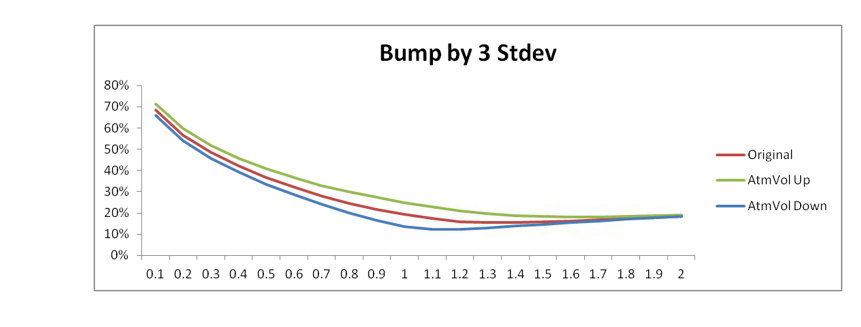

Cheyette Local Vol Model#
Table of Contents#
1. Executive Summary#
Prior to Cheyette Local Volatility model, there were 2 major short rate models in production implementation: Heath-Jarrow-Morton 1-factor (HJM1) and Quadratic Gaussian 2-factor (QG2). The advantages of short rate models are fast calibration and pricing. However HJM1 and QG2 both have their own shortcomings: HJM1 is simple and fast but it does not capture skew effect of the volatility surface, while QG2 captures both skew and smile but is relatively complicated and the smile effect is not modeled very well. More details about HJM1 and QG2 can be found in [16] and [17].
The idea is to develop a comparable short rate model which:
retains the ability of fast calibration and pricing
more comprehensive than HJM1 but simpler than QG2
captures skew effect of the volatility surface
adds flexibility for further extension(s) of the model
In this document, we will explain Cheyette Local Volatility (CLV) model. CLV model is a short rate model with skew, which uses analytical approximations for swaption volatility and skew to achieve efficient calibration. For each expiry/tenor, it can calibrate up to 2 options with different strikes, and hence captures the skew effect. Moreover, it utilizes custom PDE solver which results in accurate pricing. In particular, CLV model can be regarded as an extension of HJM1 with the addition of skew.
The main limitation of CLV model is that it is 1-factor model; therefore it cannot be used with payoffs related to correlation, such as spread options.
In below sections, we will explain the model methodology as well as model implementation in details. The minimum QA version required for reproducing test results is 2261.
2. Scope#
2.1. Model Purpose and Intended Usage#
The motivation behind the CLV model is to better capture the skew effect of volatility surface while retaining the ability of fast calibration and pricing for simple exotic payoffs. Other models that are used in production include Interest Rate Vanilla (IRV) and Libor Market Model (LMM); compared to CLV, they both have their own limitations:
IRV model can only be used to price vanilla instruments such as European options; it does not support the pricing of instruments with exotic payoffs.
LMM model uses Monte Carlo simulations, which introduces numerical noise besides being expensive to use.
2.2. Conceptual Soundness#
While CLV is a short rate model, to achieve fast and accurate implementation, we have developed good analytical approximations of swaption volatility and skew. In addition, this model is primarily used with a custom PDE routine. Therefore the calibration and pricing in CLV model remain efficient and accurate.
In summary, CLV model has below advantages compared with other alternative models.
Compared with IRV, it has the ability to price more exotic payoffs from modeling the short rate.
Compared with LMM, it can be priced with PDE hence faster and more accurate.
However, CLV also has its own limitations. The main limitation is that it is still a one factor model: unlike multi-factor models such as LMM, it cannot be used to price payoffs related to correlation, for example spread options.
In following sections, we will explain product/payoff, model methodology, numerical implementation, calibration, risks, test results and analysis, and assumptions/limitations of the model in details.
2.3. Literature Review#
The idea for the Cheyette volatility short rate modeling framework can be found in:
Interest Rate Modeling, by V Piterbarg and L. Andersen[16]
Quasi-Gaussian Model with Local and Stochastic Volatility, by V Piterbarg[17]
Efficient Simulation of the Heston Stochastic Volatility Model, by L. Andersen[1]
3. Product / Payoff / Portfolio#
3.1. Description#
The CLV model will be used to price Bermudan swaptions, callable inverse floaters (CIF) and callable capped floaters (CCF) and calculate GMS loss for these products. Currently under Barclays IHC, all Bermudan swaptions, CIFs and CCFs are single currency, namely the currency of all cash flows is the same, which is also the denomination currency of index.
3.1.1. Bermudan Swaption#
The Bermudan swaption consists of a funding leg, a structured leg and an option leg. For the i-th flow of the funding leg, the primary factors are margin \(m_0^i\) and rate index \(I_0\), the payoff is as below:
where \(I_0^i\) is reset of \(I_0\) at the i-th coupon flow from funding leg.
For the i-th flow of the structured leg, the primary factor is margin \(m_1^i\), the payoff is as below:
Here DCF (day count fraction) of each coupon flow of each leg is calculated from the corresponding accrual start and end dates of that particular flow, and N is trade notional; for a bullet swaption, N is constant for each flow; for an accreter, \({N_i}_{i=1,...,n}\) is an increasing sequence, while for an amortizer, \({N_i}_{i=1,...,n}\) is a decreasing sequence.
The value of \(m_0^i\) and \(m_1^i\) may vary by coupons, but the definition of the underlying index \(I_0\) is a specific Libor index which will be the same for the entire trade.
For the option leg, the payoff is as below:
If Long/Short = Long (Short) and Option Right = Cancel, at exercise we (counterparty) decide to cancel the swap and pay fee or keep the option until next exercise.
If Long/Short = Long (Short) and Option Right = Enter, at exercise we (counterparty) decide to enter into the remaining swap and receive fee or keep the option until next exercise.
This is a Bermudan style option giving the right to enter or cancel a swap on a set of exercise dates. The Long/Short and Option Right would be defined at leg level and cannot be changed per exercise. The swap is made of the structured and funding legs with a start date on or after the effective date of the exercise as described above. Upon exercise, a settlement fee \(F_0\) can also be applied.
3.1.2. CIF/CCF#
The CIF/CCF consists of a funding leg, a structured leg and an option leg.
For the i-th flow of the funding leg, the primary factors are margin \(m_0^i\) and rate index \(I_0\), the payoff is as below:
where \(I_0^i\) is reset of \(I_0\) at the i-th coupon flow from funding leg.
For the i-th flow of the structured leg, the primary factors are margin \(m_1^i\), rate index \(I_0\), gearing \(G^i\) and floor/cap values \(F^i/C^i\), the payoff is as below:
\(Cpn = N \times DCF_1^i \times max(F^i, min(C^i,G^iI_0^i+m_1^i))\), for callable inverse floater
\(Cpn = N \times DCF_1^i \times min(C^i,G^iI_0^i+m_1^i)\), for callable capped floater
where \(I_0^i\) is reset of \(I_0\) at the i-th coupon flow from structured leg. Here N is trade notional, and DCF (day count fraction) of each coupon flow of each leg is calculated from the corresponding accrual start and end dates of that particular flow.
The value of \(m_0^i\), \(m_1^i\), \(G^i\), \(F^i\), \(C^i\) may vary by coupons, but the definition of the underlying index \(I_0\) is a specific Libor index which will be the same for the entire trade.
For the option leg, the payoff is as below:
If Long/Short = Long (Short) and Option Right = Cancel, at exercise we (counterparty) decide to cancel the swap and pay fee or keep the option until next exercise.
If Long/Short = Long (Short) and Option Right = Enter, at exercise we (counterparty) decide to enter into the remaining swap and receive fee or keep the option until next exercise.
This is a Bermudan style option giving the right to enter or cancel a swap on a set of exercise dates. The Long/Short and Option Right would be defined at leg level and cannot be changed per exercise. The swap is made of the structured and funding legs with a start date on or after the effective date of the exercise as described above. Upon exercise, a settlement fee \(F_0\) can also be applied.
3.2. Relationship to Other Approved Models / Payoffs#
European swaption is a degenerated case of Bermudan swaption with only 1 option exercise date.
3.3. Inputs#
Trade inputs are briefly described below:
Name |
Description |
Example |
|---|---|---|
Currency |
payment currency |
USD |
Start Date |
start date of the trade |
12/27/2012 |
End Date |
end date of the trade |
10Y |
Notional |
notional of the trade |
100,000,000 |
LongShort |
Long OR short option |
Long |
PayReceive |
pay OR receive structured leg of underlying swap |
Receive |
OptionRight |
enter OR cancel underlying swap upon exercise |
Cancel |
Index |
underlying index |
LIBOR3M |
Structure Frequency |
structured leg coupon frequency |
S |
Structure Basis |
structured leg day count basis |
30/360 |
Structure Roll Convention |
structured leg date roll convention |
MF |
Structure Margin |
structured leg margin |
0 |
Structure Gearing |
structured leg index gearing (for CIF/CCF) |
1 |
Structure Cap |
structured leg cap value (for CIF/CCF) |
0.05 |
Structure Floor |
structured leg floor value (for CIF/CCF) |
0.01 |
Funding Frequency |
funding leg coupon frequency |
Q |
Funding Basis |
funding leg day count basis |
Act/360 |
Funding Roll Convention |
funding leg date roll convention |
MF |
Funding Margin |
funding leg margin |
0 |
Option Frequency |
option exercise frequency |
S |
Option Settlement Type |
option settlement type |
Physical |
Fee settlement |
fee upon exercise |
0 |
With these inputs, swap cash flows and date schedule can be generated. More details about schedule generation process can be found in [14].
3.4. Outputs#
The output is the PV and risks of the corresponding payoff.
Risks are calculated internally and will be explained more in details in Section 7.
3.5. Payoff Analysis#
As most of simple exotic payoffs, Bermudan swaption/CIF/CCF are sensitive to both rate and volatility. Therefore it has all the standard risks such as Delta, Vega, SABR risks, etc.
Regarding the volatility part, most simple exotic payoffs have sensitivities not only to term volatilities and skew, but also to forward volatility and forward skew. This is one of the main advantages to use CLV as this model captures not only term skew but also forward volatility very well, which we will examine more in later sections.
It is also noticed that these payoffs have little sensitivities to correlation, rendering them suitable to be priced using CLV.
4. Model / Methodology#
4.1. Overview of Model Design#
The CLV model is a short rate local volatility model, in which it can be divided into three interlinked sub-models:
Pricing Process
Calibration
Risk Metrics Calculation
In the following section, each of the three sub-models is discussed separately. The dependencies between the sub-models can be presented in the form shown below in Figure 4.1.
 Figure 4.1: Overview of the CLV Model Components
Figure 4.1: Overview of the CLV Model Components
The Pricing Process component of CLV is used to price complex structured rates derivatives that either cannot be priced with simpler models or for which LMM does not offer a significant advantage in pricing accuracy. To ensure robust pricing, the model is calibrated using market data via the Calibration component. The Risk Metrics Calculation component enables computation of several risk metrics, including price sensitivity to the value, volatility and the mean reversion of the underlying.
Each arrow going from one sub-model to another in Figure 4.1 denotes that there is a flow of data between them. The following dependencies between CLV components are outlined in Figure 4.1:
• Both the Pricing Process (1) and Risk Metrics Calculation (3) depend on the parameters generated in the Calibration component (2).
• The mutual dependency between the Risk Metrics Calculation (3) and the Pricing Process (1) is explained as follows:
In the Risk Metrics Calculation, trades need to be re-priced given the newly re-calibrated model curves.
These trades are fed to the Pricing Process which, in turn, returns the new PVs.
• In a standalone run of the Pricing Process (1) there is no dependency on the Risk Metrics Calculation (3).
For each sub-model, a detailed breakdown of the individual process components follows, including an outline of its inputs and outputs, a summary of the component’s purpose and a commentary on the details of the procedure.
4.1.1. Pricing Process#
This sub-model is the procedure that calculates prices of in-scope interest rate derivatives. To this end, the main purpose of the model is to predict the future behavior of interest rates by modeling the short rate given its current value. Given this objective, a set of stochastic differential equations (SDEs) governing the evolution of the short rate through time is constructed. This system of SDEs is then turned into a partial differential equation (PDE) whose solution is the present value of the final payoff. Currently, the PDE method of solving the system of SDEs is the only one used in the EOD (end of day) pricing process.
The flow within the Pricing Process is summarized below in Figure 4.2 and each of the steps identified is discussed in further detail in subsequent sections. For further details, please see section 4.2 and 5.1.
 Figure 4.2: Overview of the Pricing Process Component of the CLV model
Figure 4.2: Overview of the Pricing Process Component of the CLV model
4.1.2. Calibration#
In this sub-model, calibration parameters are computed from the current market data. The objective is to fit the parameters in such a way that the implied prices of the selected instruments match the calibration targets to the desired accuracy.
The parameters that could go through calibration are:
Volatility of the short rate \(\sigma(t)\)
Skew of the short rate \(b_r(t)\)
Mean reversion of the short rate \(\lambda(t)\)
Not all parameters have to be calibrated, if one of the above curves is not calibrated, then it is an input externally provided by the user. The choice of parameters up for calibration is defined within the calibration mode chosen. The description of different calibration modes and details of their construction are presented in Section 6.
The calibrated parameters are then used in the Pricing Process to obtain the value of the short rate in a future period and hence, to price interest rate derivatives. These parameters are quantities not directly observable in the market. The calibration process utilizes the fact that the observable price of any derivative is a function of its volatility, which for the products in scope is in turn modeled as a function of short rate volatility, skew and mean reversion. As such, analytical approximation methods are used to calculate the inverses of these functions to extract the implied calibration parameters. The key step is the derivation of the relationship between the short rate and the swap rate.
Independent from the calibration mode chosen, the calibration process can be segmented into distinct stages depicted below in figure 4.3. The following sub-sections describe each individual step in detail.
 Figure 4.3: Overview of the Calibration Component of the CLV model
Figure 4.3: Overview of the Calibration Component of the CLV model
4.1.3. Risk Metric Calculation#
The main risk metrics that can be calculated are sensitivities of the pricing function to the volatility of the underlying (Vega), value of the underlying (Delta) and mean reversion of the underlying.
The most straightforward approach to calculating risks resulting from fluctuations in these quantities is to alter the market data directly and then to re-calibrate the entire model. However this is not ideal, as the method results in very noisy risk, requires significant computational resources, while at the same time introducing the possibility of calibration failures. In this section, an alternative approach requiring only one base calibration step is applied. The two methods are distinguished by referring to the resulting risks as external and internal risks respectively.
The three main risks discussed in this section are all computed using similar strategies. Even though each risk is calculated separately, the overall framework that the calculation is conducted in is presented below in Figure 4.4.
 Figure 4.4: Overview of the Risk Metrics Calculation Component of the CLV model
Figure 4.4: Overview of the Risk Metrics Calculation Component of the CLV model
4.2. Model Description#
The idea behind CLV model is to capture skew effect by introducing local volatility with displaced skew, while retaining fast calibration by modeling 1-factor short rate dynamics. In this section, we will explain the underlying mathematical methodology of CLV model in details. In particular we will assume short rate dynamics is shifted lognormal, and we will show how to link between short rate and swap rate via analytical approximation in Section 6.1.1.
4.2.1. CLV Model Short Rate Dynamics#
Let \(f(0;t)\) be instantaneous forward rate, \(r(t)\) be short rate, \(r_1(t)\) be the stochastic part of the short rate, i.e.,
We are essentially modeling the stochastic part of short rate: \(r_1(t)\).
4.2.1.1. Formulation 1#
Let \(\Phi(t)\) be the proper convexity adjustment to ensure arbitrage free, under risk neutral measure the CLV model dynamics can be summarized by following SDE:
There are 3 model curves in CLV model, which are all assumed to be piecewise constant:
Short rate volatility \(\sigma(t)\) controls overall volatility level
Short rate mean reversion \(\lambda(t)\) controls how volatility is distributed over time (forward volatility)
Short rate skew \(b_r(t)\) controls the slope of swaption volatility
4.2.1.2. Formulation 2#
Alternatively, we can introduce a new curve, known as \(b(t)\), which is the exponential of the negative integral of \(\lambda(t)\), i.e. \(b(t) = e^{-\int_0^t \lambda(s)ds}\)
Let \(\overline{r_1(t)} = \frac{r_1(t)}{b(t)}, \overline{\Phi(t)} = \frac{\Phi(t)}{b^2(t)}\), and through change of variable, we also re-factor the original
volatility and skew, \(\overline{\sigma(t)} = \frac{\sigma(t)}{b(t)}, \overline{b_r(t)} = b_r(t)b(t)\). The new parameterized CLV model will be
displayed as below:
The model will be the same with 0 mean-reversions. Otherwise \(r_1(t)\) and \(\Phi(t)\) will be factored by \(b(t)\), respectively.
In the case of Formulation 2, below 3 model curves will be piecewise constant:
\(\overline{\sigma(t)}\): re-factored short rate volatility
\(b(t)\): exponential of the negative integral of \(\lambda(t)\)
\(\overline{b_r(t)}\): re-factored skew
4.2.2. Zero Bond Reconstruction#
Let \(B(t,T)\) be zero bond price observed at \(t\) with expiry \(T\). \(B(0,t)\) and \(B(0,T)\) are zero bonds from initial yield curve, we have the following analytical reconstruction formula for \(B(t,T)\) under formulation 1:
Similarly, under formulation 2, the zero bond reconstruction formula is as below:
A brief mathematical recap: As proof of concept, we derive bond reconstruction formula under formulation 1. We have below short rate dynamics:
Let’s define below notations:
From (4.2), by dividing a factor of \(g^2(t)\) to both sides we can have below differential equation for \(\Phi(t)\):
Integrating both sides from above equation we can then solve for \(\Phi(t)\) below:
Similarly, by dividing a factor of \(g(t)\) to both sides of (4.1) we can have below differential equation for \(r_1(t)\):
Here’s the extracted content formatted in Markdown:
Integrating both sides from above equation and replacing for Φ(t) using (4.3) gives us r₁(t) below:
The price of zero coupon bond with maturity T at time t can be expressed as below:
So the problem is down to compute the expectation of exponential integral of r₁(s) between t and T given all the information at time t. Let’s replace r₁(s) using (4.4) in above formula:
Finally, using the fact that \(\mathbf{E}\left[e^{\int_t^T f(s)dw}\big|t\right] = e^{\frac{1}{2}\int_t^T f^2(s)ds}\), we can obtain the final zero bond reconstruction formula:
For bond reconstruction formula under formulation 2, it can be derived similarly and hence is skipped here.
As a result we can project future discount factors as well as Libor/swap rates directly from r₁(t) and Φ(t) (or r̄₁(t) and Φ̄(t) in alternative formulation). For example, to project swap rate:
On float leg, assume that i-th coupon accruals from T_i^S to T_i^E and paid at T_i^F, the float leg PV is:
On fix leg, assume the j-th coupon accruals from T_j^S to T_j^E and paid at T_j^F, the fix leg annuity is:
Therefore, with above formula for B(t,T), swap rate can then be computed by \(\frac{FloatLegPV}{FixLegAnnuity}\)
Here’s the content formatted in Markdown:
4.2.3. FinBias#
Under new curve framework, forecast curve and discount curve can be different. In this case, CLV models the dynamics of short rate of the discount curve and computes its discount factor through zero bond reconstruction formula, and then infers the discount factor of the forecast curve by applying a deterministic basis adjustment (“FinBias”) to that of the discount curve. In particular, now float leg PV is:
where:
In above notations, subscript “D” indicates discount factor of the discount curve, and “F” indicates discount factor of the forecast curve. In particular, \(B_D(0,\cdot)\) and \(B_F(0,\cdot)\) are calculated from initial discount/forecast curve respectively, \(B_D(t,\cdot)\) is computed from zero bond reconstruction formula while \(B_F(t,\cdot)\) is derived via above finbias relationship.
Therefore under new curve framework, Libor/swap rates can be projected similarly as described above.
For more details about finbias, as well as the choice of the deterministic basis adjustment, please refer to [6].
4.2.4. Swap Rate Dynamics#
Under annuity measure we approximate the swap rate as the following shifted lognormal dynamics:
Here \(s(t)\) is the underlying swap rate, \(\sigma_s\) is blended volatility and \(b_s\) is blend.
The derivation of this swap rate approximation will be explained more in details in Section 6. For now, we will just assume the above swap rate dynamics. There are 5 cases of swaption skew depending on \(b_s\):
\(b_s < 0\), super-normal;
\(b_s = 0\), normal;
\(0 < b_s < 1\), mix normal and lognormal;
\(b_s = 1\), lognormal;
\(b_s > 1\), super-lognormal;
In addition, there is an approximate relation between swap skew and slope of normal volatility:
For example, if ATM lognormal volatility = 20%, skew = 50%, then the implied normal volatility at ATM+100bp is roughly 5bp higher than ATM normal volatility.
4.2.5. Short Rate versus Swap Rate Skew#
Ignoring higher orders, approximately we have below relation between swap rate and short rate skew:
The scaling factor only depends on mean reversion of short rate, while \(T_{expiry}\) is the expiry of swap rate and \(\tau_{tenor}\) is the swap tenor. The swap rate skew is parameterizable 1, hence we will use it to parameterize skew in CLV instead of short rate skew. When \(b_s(t) = b_r(t) = 0\), CLV degenerates to HJM1.
4.2.6. Underlying Adjustment#
When pricing exotic payoffs using a calibrated model, it is possible that the calibrated model prices of the underlying instruments don’t match those from the market (more specifically, from the feeder model), which is an undesirable situation because by not able to fully re-price the underlying from the market, it is likely that the trade will be mispriced as well. Underlying adjustments are a set of tools used to improve the pricing accuracy of both the underlying and the embedded option by adjusting some parameters of the payoff (e.g. barrier, coupon, strike etc.) of the underlying instruments.
In the particular case of CIF/CCF, the underlying itself is a set of volatility-dependent vanilla instruments (caplets or floorlets), so it is intuitive to use Cap Floor adjustment for CIF/CCF. After vanilla instruments prices are computed from the market and model calibration is done, we modify certain parameters (cap value and/or floor value of each coupon, whichever is applicable) on each vanilla instruments so that each vanilla instrument, with its respective adjusted parameter, can be priced by swaption vol/skew approximation from the calibrated model to match its market price. Once these adjustments on the vanilla instrument parameter are computed, they will then be kept constant and used in later pricing and risk calculations. Compared to other types of underlying adjustments, QA has tested and found that Cap Floor adjustment produces the closest results for CIF/CCF type of trades (more details about underlying adjustment can be found in [3] & [2]).
4.3. Assumptions and Limitations#
Model assumptions and limitations can be found in Section 9.
4.4. Model Parameters / Variables#
There are 3 model curves in CLV model, all are assumed to be piecewise constant.
Formulation 1#
Short rate volatility σ(t) controls overall volatility level; σ(t) is always calibrated.
Short rate mean reversion λ(t), which controls how volatility is distributed over time, is calibrated depending on calibration type.
For Co-terminal calibration, λ(t) is market input.
For V-fit calibration, λ(t) is calibrated.
Short rate skew br(t), which controls the slope of swaption vol; whether br(t) is calibrated is user input.
Formulation 2#
Short rate volatility σ(t) controls overall volatility level; σ(t) is always calibrated.
Integrated mean reversion curve b(t), which controls how volatility is distributed over time, b(t) will be calibrated for specific kinds of calibration types
For Co-terminal calibration, λ(t) is market input, and b(t) is internally integrated from λ(t)
for V-fit calibration, b(t) is calibrated.
Short rate skew br(t), which controls the slope of swaption vol; whether br(t) is calibrated is user input (for more on this refer to Section 6).
In addition, the initial forward curve f(0;t) is inferred from the input yield curve which is a feeder model.
The key difference between two formulations boils down to whether λ(t) or b(t) is piecewise constant, because piecewise λ(t) implies non-piecewise constant b(t), and vice versa. The primary advantage of piecewise constant b(t) is that it improves interpolation of calibration instruments which are not part of calibration set, thanks to the fact that the zero bond reconstruction formula is more explicitly dependent on b(t). For example, if we calibrate 10y10y and 12y10y European swaption and price 11y10y swaption from the calibrated model, we will get smoother volatility of 11y swaption compared with 10y and 12y with this improved interpolation. The model will ultimately give us smoother PV/risk of exotic trades. As a result, it reduces artificial oscillations in risk backtests due to interpolation and helps to produce smoother risks.
4.5. Model Outputs#
See Section 3.4.
4.6. Feeder Models#
Name |
GMD ID |
Description |
|---|---|---|
New curve framework |
GMD1746 |
Used for initial yield curve construction in calibration, pricing and risk calculation. |
Black-Scholes pricer |
GMD4104 |
Used for pricing European instruments with respective black and/or normal volatility in calibration, pricing and risk calculation. |
Vanilla pricing model |
GMD4105 |
Used for underlying adjustment in pricing. |
4.7. Justification Against Alternative Approaches#
Compared with IRV model, CLV can price options with more exotics options such as Bermudan options, while IRV is only able to price vanilla instruments.
Compared with LMM model, CLV can be priced with PDE which is faster and more accurate, while LMM has to resort to Monte Carlo.
More specification about above models can be referred to below documents:
IRV Model Framework [5]
LMM Model [10]
4.8. Conditions of Use#
As mentioned above, CLV model is one factor short rate model, it will be primarily used with payoffs with single rate such as Bermudan swaption.
We don’t recommend using it for payoffs related to correlation such as spread options.
We don’t recommend using it under very high volatility conditions. High volatility makes the rate process very diffusive and affects the numerical stability and accuracy. The high volatility limitation exists for HJM family of models, including LMM and Hull White. We also don’t recommend using Cheyette under very high skew conditions.
5. Implementation / Numerical Schema Description#
5.1. Description#
Most trades priced under CLV are via PDE. After changing notations, recall CLV SDE system is (for simpler notation purpose, here we write \(r_1(t)\) as \(x_t\), and \(\Phi(t)\) as \(y_t\)):
Given the final payoff \(V(T,x_T,y_T)\), its price at time t is \(V(t) = \mathbb{E}\left[e^{-\int_t^T r_udu}V(T,x_T,y_T)|\mathcal{F}_t\right]\), the discounted price \(\exp\left(-\int_0^t r_udu\right)V(t)\) is a martingale under the risk neutral measure, and hence should have 0 drift term in its stochastic diffusion process. Using Itô’s lemma we have:
Equating above drift term to 0 gives us \(V(t)\) - the solution to below PDE:
where:
QA PDE solver is used here, which calculates the present value of a trade by iteratively proceeding backwards from the trade’s expiry to present, using finite difference methods and the differential equations it satisfies, to approximate the payoff within each iteration step.
5.1.1. PDE Solver Construction#
QA PDE solver uses alternating direction implicit (ADI) scheme:
Step 1:
Step 2:
The QA generic PDE solver uses central 3 points (C3P) space discretization (in both x-axis and y-axis):
However generic solver exhibits some issues such as oscillating solution along y-axis and wrong boundary condition due to extrapolation, hence we develop a new QA custom PDE solver as below:
In time axis, we will discretize the time grid by a vector of time interval and a corresponding vector of step sizes, which are both specified by user as input parameters (displayed in later section 5.2). In particular, we will use a smaller time step in the short end and a relatively larger time step in the long end. In addition, we will also add all the trade event dates (e.g. reset dates, payment dates, exercise dates, etc.) to the time grid to capture the trade dynamics more accurately.
In x-axis, we use central 5 points (C5P) discretization. For display reason we only show 1st order below:
Compared with the conventional 3 point scheme, 5 points improves the speed of convergence because of its 4th order accuracy. Consequently, we can use fewer number of PDE nodes in x-axis and optimize on PDE performance.
In y-axis, we use upwinding 4 points (U4P) discretization (again we only show 1st order discretization):
The sign depends on the sign of coefficient of \(\frac{\partial V}{\partial y}\).
Upwinding scheme dampens oscillations observed with C3P. Source of oscillation is the lack of diffusion term in the y direction.
Furthermore, instead of normal grid of y-axis and linear extrapolation of boundary condition in generic solver, we will use mixed LN grid and mixed linear-parabolic extrapolation, respectively, in custom solver.
Boundary conditions are here to deal with shadow points at the edge of the grid. We use linear extrapolation for the point on the edge, and parabolic extrapolation for the point just before:
In PDN custom solver is currently used for CLV. Exact details can be found in document “Cheyette Local Vol PDE” [7].
5.1.2. PDE Solver Pricing#
Once the PDE solver is constructed (i.e. with the time t grid, space x and y grids generated, the initial payoff and the corresponding boundary condition set up), we can use it to iteratively proceed backwards to price any derivatives following the specific discretization method. In particular, we construct 2 solvers which can interact with each other: one is the underlying solver while the other is the option solver. We start from the trade’s last option exercise date. At each \((x_i,y_j)\) point on the space grid, on the last exercise date, we can extract the initial payoff value for both underlying and option, then we follow the specific discretization method and proceed backwards on the time grid, with following updates whenever applicable applied to the solvers detailed below:
At each coupon date, we will update the underlying solver to add the coupon to the underlying price.
Fixed leg: the value of any fixed coupon is added to the underlying solution at its payment date.
Float leg: the present value of any floating coupon is added to the underlying solution at its reset date.
At each option exercise date, we will compare the underlying solver price and the option solver price to determine whether we exercise the option or not, and then adjust the option price accordingly. It should also be noted that at this step Rannacher scheme and/or payoff smoothing will be used to ensure the 1st and 2nd order payoff smoothness.
Rannacher stepping is the scheme of taking fully-implicit steps immediately after potential discontinuities are introduced into the solution in order to dampen the oscillations that can occur in the Crank-Nicolson scheme. These implicit steps can effectively dampen oscillations. The loss of accuracy is negligible if we control the number of implicit steps and second-order convergence of the Crank-Nicolson method can be retained. For more information on Rannacher stepping see: Giles & Carter, 2006 [12].
Payoff smoothing is used when the payoff includes functions that are not differentiable or sometimes not even continuous, which can lead to unstable risk or very slow convergence. Different methods, for example using a very tight Gaussian to represent delta function, can be applied to the payoff function to solve this problem. For more details about payoff smoothing, please refer to [13].
The discount factor of time T at any time t (t < T) is computed from the bond reconstruction formula which further depends on \((x_t,y_t)\) at time t.
The initial instantaneous forward rate f(0,t) is computed on the time grid by f(0,t) = -d[ln(B(0,t))]/dt, which essentially assumes this is piecewise constant across each time step.
5.2. Inputs#
The numerical inputs related to pricing are set as below (and used in PDN):
Name |
Description |
Value |
|---|---|---|
Method |
evaluation algorithm |
Backward |
TGridShrinkingTenors |
intervals of varying time grid |
{0M,1M,2Y,10Y,20Y,40Y} |
TGridShrinkingSteps |
step sizes of varying time grid |
{1,5,10,20,40,60} |
GridRefinementLevel |
time frequency of updating space grid |
2 |
NbPtsX |
number of points of grid X |
201 |
NbPtsY |
number of points of grid Y |
41 |
StdX |
standard deviation of grid X |
5 |
StdY |
standard deviation of grid Y |
5 |
GridX |
type of grid X |
SLNS |
GridY |
type of grid Y |
MixedLN |
BC |
boundary condition used |
MixedDeltaGamma |
UseFISolver |
flag to use custom solver |
TRUE |
“TGridShrinkingTenors” and “TGridShrinkingSteps” controls the grid generation in time space without considering the trade event dates. For instance, in above example, we discretize the time grid every 1 day between 0M and 1M, every 5 days between 1M and 2Y, every 10 days between 2Y and 10Y and so on.
“StdX” controls the grid bounds in X space, indicating the number of standard deviation on the grid.
“NbPtsX” controls the grid size in X space, indicating the number of points we have on the grid.
“GridX” controls the grid generation in X space. We infer the equivalent shifted lognormal distribution of the factor x and grid discretization is then performed accordingly with input “StdX” and “NbPtsX”.
Grid Y is generated similarly with the 3 corresponding parameters specified for the Y grid.
Notice compared with “NbPtsX”, “NbPtsY” can be kept small as factor y has a small variance because of lack of diffusion term. We justify the choice of 201 (41) for number of PDE nodes along X (Y) dimension by examining the convergence rate of the PV of Bermudan/CIF portfolio under Barclays IHC in Section 8.3.4. We determine the convergence is achieved by measuring, in Vega term, the PV difference to benchmark grid. More details can be found in [7].
“GridRefinementLevel” controls the frequency on the time grid to update the space grid. For instance, in above example, for both x and y grids, we will update the space grid every 2 years. In particular, we use the standard deviation of each respective factor at the 1st node on t grid after 2Y to generate the space grid up to 2Y, and then use the std at the 1st node on t grid after 4Y to generate the space grid from 2Y to 4Y, as so on.
“BC” controls the boundary condition used.
“UseFISolver” controls if custom solver is used (to be able to use 5 points and upwinding discretization).
Above values shown in the table are chosen to optimize PDE solver performance and are default values of the PDE solver.
5.3. Quality Control#
We test for PDE convergence, default value of grid geometry and PDE limitations in Section 8.3.4.
6. Calibration#
6.1. Description#
The CLV model uses analytical approximations for swaption volatility and skew to achieve efficient calibration. There are 2 different calibration types:
Co-terminal
V-fit
6.1.1. Swaption Volatility/Skew Approximation#
1) Approximation Step 1: Swap Rate Time Dependent Dynamics#
In the first approximation step, we assume swap rate is time dependent shifted lognormal diffusion:
As shown previously, zero bond has analytical reconstruction formula and is a function of \(r_1(t)\) and \(\Phi(t)\), therefore we can also represent swap rate as an explicit function:
Since \(s(t)\) is martingale under annuity measure and only \(dr_1(t)\) has stochastic term, applying Itô’s lemma:
The RHS is an explicit function of \(r_1(t)\) and \(\Phi(t)\). Considering short rate vol is usually less than 1% and \(\Phi(t)\) is of second order of short rate, the variation of \(\Phi(t)\) is less significant, so we will freeze it at its expectation under annuity measure, i.e., \(\Phi'(t) = E^A[\Phi(t)]\).
Once freezing \(\Phi(t)\), the RHS is now an explicit function of \(r_1(t)\), hence an implicit function of \(s(t)\). To derive \(\sigma_s(t)\) and \(b_s(t)\), we use 1st order Taylor expansion to RHS around initial swap rate \(s_0\), with \(|_0\) indicating evaluation at \(s(t) = s_0\):
After comparing with the assumed shifted lognormal diffusion in the beginning, we then get below:
Notice that via zero bond reconstruction, swap rate \(s(t)\) can be expressed as an explicit function of \(r_1(t)\). Therefore its derivative to \(r_1(t)\) in above formula can be computed analytically. [Previous content remains unchanged…]
2) Approximation Step 2: Averaging Volatility and Skew#
In the second approximation step, we will use the swap rate volatility and skew derived above, reduce the time dependency and derive the flat volatility and skew of the process.
Both values are computed by numerical integration across the model curve nodes and assuming the model curve is piecewise constant. Further details can be referred in below document - “Time to Smile” [15].
With the blended vol and skew, we can calculate the model swaption/caplet prices V(0) using the shifted lognormal pricing formula:
where A(0) = annuity of the caplet/swaption
6.1.1.1. Evaluation of \(E^A[\Phi(t)]\) and \(r_1(t)|_{t=0}\)#
To derive the final result of \(\sigma_s\) and \(b_s\), we still need to solve two unknowns: \(E^A[\Phi(t)]\) and \(r_1(t)|_{t=0}\)
Evaluation of \(\Phi^*(t) = E^A[\Phi(t)]\)
Let \(P^A\) and \(P^B\) be probability measures associated with annuity and risk neutral respectively, \(\beta(t)\) is money market account, and \(Z(t)\) being the change of numeraire ratio between these two measures, i.e.:
\(Z(t)\) is a function of \(r_1(t)\) via reconstruction formula. Given that \(Z(t)\) is a martingale under risk neutral measure, using Itô’s lemma and further freeze the zero bond price at 0, approximately we have:
By change of measure theorem, we have the following relationship between \(dw^A(t)\) and \(dw^B(t)\):
Therefore, by replacing \(dw^B(t)\) with \(dw^A(t)\) in the CLV short rate dynamics, we get below dynamics under annuity measure:
\(\begin{cases} dr_1(t) &= (\Phi(t) - \lambda(t)r_1(t) - H_w(t)\sigma_r^2(t))dt + \sigma_r(t)dw^A(t) \\ d\Phi(t) &= (\sigma_r^2(t) - 2\lambda(t)\Phi(t))dt \end{cases}\)
Taking expectation on both sides, through Markovian property and approximation of the last equation, we get the following ordinary differential equation (ODE) system:
\(\begin{cases} dE^A[r_1(t)] &= (E^A[\Phi(t)] - \lambda(t)E^A[r_1(t)] - H_w(t)E^A[\sigma_r^2(t)])dt \\ dE^A[\Phi(t)] &= (E^A[\sigma_r^2(t)] - 2\lambda(t)E^A[\Phi(t)])dt \\ E^A[\sigma_r^2(t)] &= \sigma^2(t)(1 + b_r(t)E^A[r_1(t)])^2 \end{cases}\)
And \(\Phi^*(t) = E^A[\Phi(t)]\) can be solved through above ODE system.
Evaluation of \(r_1(t)|_{t=0}\)
Here we show how to evaluate the short rate \(r_0 = r_1(t)|_{t=0}\) where \(s_0 = s(t,r_0,\Phi^*(t))\).
Since \(s(t)\) is monotonic and approximately locally quadratic w.r.t. \(r(t)\), we use quadratic iteration to search for the root. Suppose at iteration \((i-1)\) the short rate is \(r_{i-1}^*\), at next \(i\), we solve for \(r_i^*\):
The initial condition is \(r_0^* = 0\).
6.1.1.2. Expansion Point Improvement#
We can actually improve the accuracy by changing the point we freeze at to be \(\Phi^*(t) = E^A[\Phi(t)|S_t = S_0]\).
Picking this point is relevant as freezing around this point is equivalent to 1st order Taylor expansion. Once this point is found we determine \(r_1(t)|_{t=0}\) the same way as previously explained and formulas stay identical.
Integrating the SDE for \(\Phi(t)\), we can show that:
We then Taylor expands \(x_u\) around \(S_u\) and we can now express \(\Phi^*(t)\) as a function of the integral (over \(u\)) of the conditional moments of \(S_t\):
In above formula \(C_0\), \(C_1\), \(C_2\) can be computed analytically since \(\sigma^2(u)(1 + b_r(u)x_u)^2\) is an explicit function of \(x_u\) which is an implicit function of \(S_u\) via zero bond reconstruction.
We can further calculate the integral of \(\mu(u,t)\) and \(V(u,t)\) in a closed form way. At each step \(u\), through the averaging process, we know the temporary shifted lognormal distributions of \(S_u\) (using all information up to \(u\)), in particular we introduce below notations:
\(dS_u = \sigma(u)\left(\beta(u)\frac{S_u}{S_0} + 1 - \beta(u)\right)dw\)
Through the property of Brownian Bridge, we have:
In particular, we can Taylor expand above two equations so that we can separate the \(u\) term and \(t\) term in the expression of \(\mu(u,t)\) and \(V(u,t)\).
For illustration, below is the 2nd order Taylor expansion of \(\mu(u,t)\):
\(V(u,t)\) can be Taylor expanded similarly and for display reason will be omitted here.
As a result, we can rewrite \(\Phi^*(t)\) as below:
Finally, by replacing \(B_i(u)\) with \(C_1B_i(u)\) and \(B_j(u)\) with \(C_2B_j(u)\), we can recursively update \(I_i(t)\) and \(J_j(t)\) and hence calculate \(\Phi^*(t)\) at each time step going forward.
Full description of this methodology and accuracy comparison is available at document [9]. The quality of approximation with expansion point improvement has better convergence specially for long dated trades or in high skew environment, and therefore is used in production.
6.1.2. Calibration Types#
Recall the volatility/skew approximation outlined above:
Approximate swap rate with time-dependent shifted lognormal process
Approximate swap rate with averaging volatility and skew shifted lognormal process
The main idea of calibration is to match the model price of a set of calibration instruments implied from the averaged volatility and skew to those “observed” price in the market. Note that due to the one-to-one relationship between price and implied volatility, in model implementation we try to match the implied volatility of the calibration instruments. Here for simplicity, we do not distinguish between price and volatility in the objective function.
Co-terminal
In Co-terminal calibration, mean reversion λ(t) is market input, default is 0. We calibrate short rate volatility σ(t) and skew br(t).
For each expiry/tenor pair (T,τ), we calibrate to 2 swaptions with different strikes:
ATM swaption to calibrate σ(t)
OTM swaption to calibrate br(t)
The calibration is done in 2 steps:
First calibrate σ(t) to ATM swaption
Then calibrate br(t) to OTM swaption
For each expiry/tenor pair (T,τ), we have below calibration objective function:
where σ^mkt is market implied volatility and σ^mdl is model implied volatility.
V-fit
In V-fit calibration, we calibrate both short rate volatility σ(t) and mean reversion λ(t).
For each expiry/tenor pair (T,τ), we calibrate to 1 ATM swaption to calibrate both σ(t) and λ(t).
The calibration is done in 2 steps:
First calibrate σ(t) to ATM swaption with λ(t) = 0
Then calibrate λ(t) to ATM swaption with σ(t) fixed
For each expiry/tenor pair (T,τ), we have below calibration objective function:
where σ^mkt is market implied volatility and σ^mdl is model implied volatility.
The idea behind V-fit calibration is to capture the term structure of volatility. For example, if we have 2 ATM swaptions with same tenor but different expiry, say 1y10y and 10y10y, we can calibrate λ(t) to match both volatilities. In particular, if 1y10y vol is higher than 10y10y vol, we will get positive mean reversion.
V-fit
In V-fit calibration, there are 2 types of calibration set:
2 co-terminal swaptions at 2 different strikes, 1 caplet column. In this case all the 3 model curves σ(t), b(t), λ(t) are calibrated.
2 caplet columns at 2 different strikes, 1 co-terminal swaption. In this case all the 3 model curves σ(t), b(t), λ(t) are calibrated.
Constant Expiry (CE)
In CE calibration, we calibrate to a 0 skew CLV model using swaptions with same expiry but different tenors. We calibrate short rate volatility σ(t) and mean reversion λ(t).
Both calibration types rely on global optimization, where calibrated curves are best fit to market swaption and caplet prices. The approximation of swaption volatility/skew is used here.
Here the objective function of the optimization problem is the Vega-weighted sum of square differences between model and market prices of all the instruments in the calibration set, i.e.
where P^market denotes the market price which is calculated from the feeder model using Black formula (with the only exception when β = 0, in which case the market price is calculated using Bachelier), while P^model denotes the model price which is calculated using the above swaption vol/skew approximation.
As one can expect, we want to assign more weights to those instruments with larger Vega risk to reduce the overall discrepancy from the market resulting from calibration error. Here the Vega risk of each calibration instrument is calculated on the fly numerically using finite difference.
In production the optimization solver used is Levenberg-Marquardt, which is an industry standard for solving non-linear least squares problems, which arise especially in least squares curve fitting.
6.1.3. Advanced Calibration Techniques#
6.1.3.1. Technical Mean Reversion (TMR)#
It is noticed that skew will have an impact on swaption forward volatilities. Similar to mean reversion, increasing skew will increase swaption forward volatility, and we denote the forward volatility impact introduced by skew as “technical mean reversion” (TMR). Therefore the total skew impact can be broken down into 2 parts: terminal skew and TMR. In the model calibration, to control the forward vol impact from total skew impact, we introduce a new calibration technique - TMR calibration, which will be a two-stage process. The effectiveness of TMR calibration, in addition to the relationship between skew and forward volatility will be tested in section 8.2.1.
We will start by discussing three representations of forward volatility as possible TMR calibration instruments:
i. Correlation ii. Forward Volatility iii. Midcurve Volatility
We first introduce correlation. Assuming swap rate is shifted lognormal dynamics:
Here we consider co-terminal swaps, in particular s₁ and s₂ have same end date but different start dates, such as 1Y into 19Y and 2Y into 18Y. For illustration, correlation of s₁ and s₂ is defined as below (usually s₁ and s₂ are either both normal or both shifted lognormal):
where:
Notice that correlation directly depends on swaption forward volatility, i.e. σ₂(u) while T₁ < u < T₂ and this justifies the use of serial correlations of co-terminal swap rates as our TMR calibration instruments to represent forward volatility. Specifically, correlation targets are defined between pairs of consecutive co-terminal swaptions in calibration set. For example, if we calibrate to 20Y co-terminal expiry and we have calibrated swaptions ranging from 1Y into 19Y to 19Y into 1Y (the actual calibration set can be configured by user input), the correlation targets are calculated for each two “adjacent” swaptions in the calibration set.
The second approach is to use forward volatilities directly as our TMR calibration instruments. Clearly, forward volatilities follow same structure of correlation targets. For the above example, we compute forward volatility of 1Y1Y18Y, 2Y1Y17Y, etc., for TMR calibration. One caveat in using forward volatilities is that by construction, they have ‘shorter’ expiries (i.e. time between the expiries of two adjacent co-terminal swaptions) and hence their MinDelta/MaxDelta limits are triggered more often compared to co-terminal swaptions.
The final and more appealing alternative to the above two choices is to use midcurve volatilities as TMR calibration instruments, i.e. midcurve volatility of 1Y1Y18Y, 2Y1Y17Y, etc., in above structure. They have longer expiries compared to forward volatilities and therefore their MinDelta/MaxDelta limits are not triggered as often. The use of midcurve volatilities as TMR calibration instruments not only provides simplicity but also better stability compared to the other two alternatives. As a result, midcurve volatilities will be used in TMR calibration.
• TMR Stage 1 In stage 1, we first use Co-terminal or V-fit to calibrate a base CLV model and use it to calculate TMR midcurve volatility targets. In practice, instead of calibrating skew, we will input 0 fix skew (as a result, base model degenerates to HJM1). Specifically,
Co-terminal: calibrate to short rate volatility only. For each expiry we have 1 swaption
V-fit: calibrate to both mean reversion and short rate volatility. For each expiry we have 1 caplet in column and 1 swaption in co-terminal
We will use global optimization to calibrate the base CLV model, during which we will also get the shifted lognormal swap rate dynamics via approximation. We then compute TMR targets via computing the midcurve volatilities directly. The TMR targets will be used in stage 2 below. Note that we show two other alternatives as possible TMR calibration instruments above. In practice, we prefer to use midcurve volatility targets due to its simplicity and its clear advantage over other alternatives as explained above.
• TMR Stage 2 In stage 2, we will calibrate CLV model to market vol and skew, as well as the midcurve volatility targets we already calculated in stage 1. For each expiry we will have 2 swaptions in co-terminal (with user specifying different strikes), plus the mid-curve volatilities, we will then use global optimization to calibrate all three model curves (short rate volatility, skew and mean reversion) using below objective function:
where i ∈ {TMR instruments} and j ∈ {stage 2 instruments}
Note that we directly compute midcurve volatilities from volatility and skew term structure of swap rates during both TMR stages. In particular, recall we have below swaption vol/skew approximation:
Similar to standard European swaption, we can use above averaging formula to imply the midcurve (or even forward vol) instrument’s flat volatility and skew from the model curves during calibration, namely:
where weight function \(w_s(t) = \frac{σ_s^2(t)\int_{T_i}^t σ_s^2(u)du}{\int_{T_i}^{T_j}(σ_s^2(t)\int_{T_i}^t σ_s^2(u)du)dt}\) and
where T_E is option expiry, T_S is swap start, T_End is swap end.
In addition, the TMR instrument strike is user input (as model parameter) and currently set as ATM (i.e. forward rate of the same underlying), the TMR instrument weight used in global optimization is calculated as the Vega risk of the corresponding European swaption that has the same underlying as the TMR instrument.
As a final remark, even though we talk about calibration using ‘volatilities’ above, internally we perform the calibration using prices rather than implied volatilities. These two are actually equivalent (through Black-Scholes formula) once the problems like inverting volatilities etc. are ignored. So the choice between the two is purely due to stability reasons and thus we did not distinguish between the two cases in above discussion.
Another final remark is that during TMR stage, correlation/forward volatility/midcurve volatility targets are essentially equivalent and the choice to use which one as final TMR instrument targets is controlled by model parameter (currently by default we use midcurve volatility). Therefore in below sections we do not distinguish them and use correlation targets as the general representation of the TMR instrument targets.
6.1.3.2. Shifted Mean Reversion (SMR)#
The general practice of marking the mean-reversion (MR) curves is to choose some ‘average’ representative value, perform various V-fit calibrations with various setups to get an idea about MR level in the market, and finally setting a ‘rough’ MR level for Bermudan prices to make sense. This method is prone to several disadvantages, for example, the MR level is rarely adjusted and does not react properly to changes in the market. Another disadvantage is that the MR level is general for the whole market and thus is not trade-specific. So SMR is introduced: it first calibrates a MR curve in stage 1, applies a shift to it so that forward vol level is controlled, and uses the shifted MR curve as an input to the stage 2 calibration. This way, we can avoid the situation where an outdated or incorrect MR curve is used. Specifics of SMR are detailed below:
• SMR Stage 1 In stage 1 of SMR, we use V-fit to calibrate a base CLV model. Specifically, we use 0 fix skew, and use global optimization to calibrate to short rate volatilities and mean reversion. We will use the calibrated mean reversion curve and apply an external shift to it in order to control forward vol (The relationship between MR levels and forward volatilities will be tested in section 8.2.2). The shifted MR curve will then be used as an input into SMR stage 2. Note that the external shift does not have to be flat; it can have term structure. The level and term structure of the shift is determined by Front Office (FO) to yield reasonable Bermudan prices.
• SMR Stage 2 In stage 2 of SMR, we calibrate CLV model using the shifted MR curve from stage 1 fixed as input. We use Co-terminal calibration with 2 swaptions for each expiry in the co-terminal, and use global optimization to calibrate to market vol and skew.
6.1.3.3. SMR + TMR#
The goal of SMR is to calibrate CLV model with a more intuitive and meaningful mean reversion curve, thus SMR and TMR can be combined in which the shifted mean reversion curve from the calibrated CLV model in SMR stage 1 can be used as an input to TMR stage one. We detail the specific steps below.
• SMR + TMR Stage 1 This stage will be exactly the same as SMR Stage 1, during which we use V-fit to calibrate a 0-skew CLV model. The resulting MR curve will be shifted by an external amount.
• SMR + TMR Stage 2 This stage is same as TMR stage 1, but instead of having a choice of calibration style (V-fit if we calibrate both short-rate vol and MR, and Co-terminal if we only calibrate to short-rate vol), we can only use Co-terminal calibration because we want to use the shifted MR curve from previous stage as an input, i.e., we will use shifted MR curve as an input, fix skew at 0, and use Co-terminal calibration and global optimization calibrate to short rate vol. This calibrated CLV model is used to calculate midcurve volatility targets, which will then be used in stage 3.
• SMR + TMR Stage 3 This stage is the same as TMR stage 2: we calibrate all three curves (short rate vol, skew, and MR) in the CLV model. For each expiry, we will have 2 swaptions in co-terminal, as well as the mid-curve volatilities.
6.1.4. Calibration Strike Choice#
CLV has the flexibility to specify which strike the model is calibrated to, with two common choices being the “Trade Strike” (“Trade”) and Exercise Boundary (“EB”). To compute Trade Strike or Exercise Boundary, one needs to do a preliminary calibration (by default ATM 0 skew with the same original calibration type) and pricing. To be specific, once the preliminary model is calibrated we use it to construct the PDE grid and price the trade (as described in Section 5), and during pricing when going through each option exercise date, we search for the state variable x on the grid such that:
• Trade Strike: the remaining underlying swap is priced at 0
• Exercise Boundary: the remaining underlying swap has same value as remaining option value
and then with this state variable x we solve for the par rate of the market convention swap with the same date structure of the remaining underlying swap to be the trade strike/exercise boundary. Notice that for trade strike it is not uncommon that none of the points on the grid will price the remaining underlying swap exactly at 0, in which case we will search for two adjacent points on the grid such that the remaining underlying has different signs (as it is monotonic to the state variable), and then solve for the par rates of the market convention swap on these two adjacent points and linearly interpolate them to be the trade strike (as swap value is linearly monotonic with respective to par rate).
Intuitively, Trade Strike is effectively the “equivalent” fixed rate that corresponds to the strike on the vanilla swaption which will be used for hedging that particular exercise date (while we get this equivalency from the specific state which will price the market convention swap and original underlying at par at the same time). For example in Bermudan swaption, the trade strike will be almost identical to the fixed strike of the trade (hence the name “Trade Strike”) which is the most intuitive strike that we will use to hedge such trades. Exercise Boundary is useful in case that it provides the strike at which the holder of the option will decides to exercise the option.
Below we list some example choices of strike that we use in PDN:
• In Stage 1 of TMR calibration, per each expiry, calibration strike is “ATM” strike for swaptions and caplets (if applicable), which is the most liquid point traded on the market. In Stage 2 of TMR calibration, per each expiry, we have two swaption strikes. One is “ATM”, the other one is “Trade”. For swaptions, using “Trade” ensures that pricing of European-style exercise is arbitrage-free. For caplets (if applicable), using “Trade” ensures that caplet strike is roughly same moneyness level as swaption strike, hence ensuring proper forward volatility behavior.
• For amortizers/accreters, we use the average of “Trade” and “EB”, i.e. “50%Trade+50%EB”. For these product types, the market is less liquid, so “ATM” level is less relevant for Bermudan trades with non-constant notionals compared to “Trade” or “EB”.
More details on this can be referred to below document [21].
6.1.5. Usage of Calibration Types#
In production default setting, we use SMR + TMR for bullet bermudan swaptions, Co-terminal for amortizers/accreters, and V-fit for CIF/CCFs.
• Bullet Bermudans For Bermudan bullet swaptions, we want to calibrate mean reversion to reflect up-to-date market conditions, and we want to control forward volatility impact from skew. Therefore SMR + TMR is used.
[Previous content remains unchanged…]
Below are the calibration parameters used in CLV model:
ATMStrike: strike for non-smile calibration, can be specified as a absolute strike number (e.g. 70%) or ‘ATM’
Smile: an integer specifying which tenor the smile calibration is applied to, possible values are 0, 1, 2. If value is 0, it means no smile calibration
SmileStart/SmileEnd: specified as either dates or tenors, determines the start and end dates of calibration instruments to include in smile calibration
SmileStrike1/SmileStrike2: similar to ATMStrike but used for smile calibration
IgnoredExpiries: a list of expiries of instruments to be excluded from the calibration set
Tenor1MinimumExpiry: specified as a tenor or date, this allows the user to specify a different starting point for instruments in the calibration set, used for V-fit only
TMRStart/TMREnd: specified as either dates or tenors, determines the start and end dates of calibration instruments to include in TMR calibration
z74CheyetteTMR: Boolean specifying whether to turn on TMR calibration or not
z75CheyetteTMRBaseStrike/z76CheyetteTMRBaseSkew: determines strike and skew used for TMR base calibration when z74CheyetteTMR = true. note that z76CheyetteTMRBaseSkew usually set to 0 for reasons described in Section 6.1.3.1, but can be set to other values as well
z74CheyetteTMRUseMidCurve: Boolean specifying whether to use midcurve swaptions or forward vols to calculate TMR targets
z04ShiftedMeanRevCalib: Boolean specifying whether to turn on SMR calibration or not
For more details about CLV parameters, see [11].
6.4. Justification#
The idea behind CLV TMR calibration is to control the skew impact on swaption forward volatility, so that we can attribute the total impact into two parts - terminal skew and forward vol. To do that in stage 2 we reuse the same midcurve targets from stage 1. Furthermore, to do V-fit in stage 1 and incorporate midcurve targets in stage 2, we need to resort to global optimization in both stages’ calibration.
The goal of CLV SMR calibration is to use a market-meaningful mean reversion curve as an input, instead of the possibly stale MR curves marked by the Desk. The shift of the MR curve is introduced with the same goal as TMR, i.e., to bring down the forward vol levels.
6.5. Quality Control#
We always check the errors of model and market prices for each calibrated instrument and make sure errors are within certain tolerance. In addition we input a very low tolerance (default value 1bp) to the solver.
In case of it exceeds the tolerance, we will return certain exceptions in below form:
Fit exceeded tolerance [tolerance] abov for swaption with expiry [expiry] and tenor [tenor]
We will show results of successful calibrations area within the tolerance in Section 8.3.5.
6.6. Limitations and Risk Assessment#
Calibration failure can be a commonplace occurrence. One reason failure occurs is that the dynamics of the model becomes incongruent with dislocation in market volatility and skews. Consider Co-terminal calibration with 0 mean reversion curve and 2 calibration instruments. If market (annualized) normal volatilities are 80bps and 50bps for 1-year and 2-year options respectively, the model sigma curve simply cannot be positive unless sigma becomes negative between 1-year and 2-year. Another reason for failure comes from calibration instruments. For example, suppose we use 0 skew V-fit, where swaption strikes are set to be high above ATM and caplet strikes are ATM. High strike swaption volatilities are much higher than ATM caplet vols. This would cause the mean reversion curve to become negative and reduce sigma to level close to 0. Finally, consider V-fit where we calibrate to 2 swaption strikes high above ATM, and ATM caplets. The positioning of the 2 swaption strikes can result in large positive skew. This would imply quite low volatilities for ATM caplet, potentially causing calibration failure.
In general, when calibration fails, errors are thrown and users are alerted to the presence of failure. The model is not designed to failure silently. QA team will investigate and propose remediation to calibration parameters to solve calibration error. After which MO will run impact and FO will review and approve.
7. Risk (Calculated by the model/payoff)#
We first introduce the methodology of external/internal risk that we briefly mentioned in 4.1.3.
External risk is straightforward:
calibrate base model and price base PV
directly bump market data, recalibrate bumped model and price bumped PV
difference base PV and bumped PV
However, the external risk has some issues such as possible recalibration failure and unstable risk due to bump of market data. Therefore we develop a new risking methodology - internal risk, where we only do one base calibration. Further details can be referred in below document [22].
7.1. Description#
7.1.1. Volatility Sensitivity#
We will show how the internal alpha risk is calculated. For illustration, we assume the final model curves have \(2N + M\) points in total: volatility and skew curves have \(N\) points respectively, mean reversion curve has \(M\) points. In another word we have \(2N\) swaptions in co-terminal (\(N\) expiries, each expiry has two strikes) and \(M\) caplets in column (\(M\) expiries) in our V-fit calibration set. It is clear that \(M \geq 0\), \(N \geq 0\).
Let us use the following notations,
\(T\): trade
\(V_1^1, V_2^1,\cdots , V_{N+M}^1\): calibration instrument price in stage 1, including \(N\) swaptions and \(M\) caplets
\(p_1^1, p_2^1,\cdots , p_{N+M}^1\): volatility and mean reversion curves in stage 1
\(\rho_1, \rho_2,\cdots , \rho_M\): correlation targets (same number of points as mean reversion)
\(V_1^2, V_2^2,\cdots , V_{2N}^2\): calibration instrument price in stage 2, including \(2N\) swaptions
\(p_1^2, p_2^2,\cdots , p_{2N+M}^2\): volatility, skew and mean reversion curves in stage 2 (final model curves)
Note here for illustration purpose we use correlation targets to represent the TMR targets, in reality these will be whatever we choose to use as the TMR instrument targets. This is used in all below risk descriptions.
In stage 1, we calculate the sensitivity of correlation targets to a bump of alpha in SABR surface:
In a matrix form, this becomes:
where
\(T_\rho^1\) is the sensitivity of correlation targets to the volatility and mean reversion curves in stage 1, it is an \(1 \times (N + M)\) vector with
\(J_{base}\) is the Jacobian matrix of sensitivity of the calibration set in stage 1 to above two curves, it is an \((N + M) \times (N + M)\) square matrix with
\(V_\alpha^1\) is the matrix of Vegas for each above calibration instrument in stage 1, it is an \(1 \times (N + M)\) vector with
In stage 2, we use above sensitivity of correlation targets to calculate the sensitivity of trade to alpha:
Essentially we can treat each correlation target as an additional calibration instrument in stage 2.
Just as stage 1, in a matrix form, this becomes:
where
\(T_p^2\) is the sensitivity of the trade to the model curves in stage 2, it is an \(1 \times (2N + M)\) vector with
\(J_{final}\) the Jacobian matrix of sensitivity of the calibration set in stage 2 plus the correlation targets, it is an \((2N + M) \times (2N + M)\) square matrix with
and \(V_\alpha^2\) is the Vega for calibration instrument in stage 2 plus the correlation sensitivity to alpha from stage 1, it is a \((2N + M) \times 1\) matrix with
In both stages, matrix inversion is achieved by singular value decomposition, with exception thrown when the inversion fails. In particular, if the base calibration succeeds, the Jacobian matrix will always be invertible from the fact that the inverted Jacobian is required during the base calibration. This gives internal risk the merit that the risk calculation will always be successful as long as the base calibration succeeds.
As a result, we only need one base calibration, and calculate numerical derivatives by directly bumping model curves, with multiple times pricing performed. This way internal alpha risk is completed.
Note that the numerical bumping for model curves is usually done by above additive difference, with the bump size specified by the parameters described in below section 7.2.
Other internal SABR risks can be calculated in the similar way as above.
The internal ATM Vega risk can be computed by the alpha risk scaled by certain conversion factors, more specifically the ATM Vega is computed as alpha risk scaled by \((d\text{ATMVol}/d\text{Alpha})^{-1}\), i.e.,
Here \(\frac{d\sigma_{ATM}}{d\alpha}\) is calculated numerically by bumping alpha and revaluating/differencing ATM vol (ATM normal vol in the case of calculating ATM bp Vega) between the base and the bumped levels of alpha.
7.1.2. Curve Sensitivity#
It is more complicated for internal delta, as correlation targets and trade themselves are priced with the curve whereas in previous section they do not depend on SABR (only the calibration does).
After some corrections, for internal delta we have the following matrix forms:
In stage 1,
Delta of kth correl target = \(T_\rho^1J_{base}^{-1}(V_c^1 - X) + \frac{\partial\rho_k}{\partial C}\), where \(X_{ij} = \frac{\partial V_i^1(p^1,C)}{\partial C_j}\) (7.2)
In stage 2,
where
Here X and Y are the corresponding matrices of the sensitivities of calibration instruments/correlation targets to the curve and priced with the CLV model at each stage. They have the same dimension as \(V_c^1\) and \(V_c^2\) respectively.
Note that
\(T_\rho^1\), \(T_p^2\), \(J_{base}\), \(J_{final}\) are the same as mentioned in Section 7.1.1
\(V_c^1\), \(V_c^2\) are the Deltas for calibration instruments in stage 1 and 2 respectively. Recall that calibration instruments are \(N\) swaptions and \(M\) caplets in stage 1, and \(2N\) swaptions and \(M\) correlation targets in stage 2.
These two formulas have a similar format, and they can be explained quite intuitively as below:
Reusing the same notations above we can write the trade price \(T\) as a function of yield curve \(C\) and model curve \(P\), while model curve is calibrated from the yield curve and calibration instruments \(V\) which further depends on the yield curve and SABR, as a result we can write \(T\) and its derivative to \(C\) as below:
Additionally, we can write the same for the calibration instruments \(V\), as well as its derivative to \(V\) and \(C\):
Therefore replacing \(\frac{\partial P}{\partial C}\) term in (7.4), we get
which is essentially the same as in (7.2) and (7.3) shown above. This way internal Delta is completed.
The Gamma risk is usually calculated by differencing Deltas under different curve shift levels. In particular we perform calibration and calculate Deltas under two different curve shift levels respectively, one in shifted up level while the other in shifted down level, then do numerical difference of the two Deltas and divide by the shift size difference to calculate the Gamma.
7.1.3. Mean Reversion Sensitivity (Co-terminal Calibration Only)#
When using Co-terminal calibration we will input external mean reversion curve marked by traders for calibration and pricing, therefore we can also calculate internal risk for mean reversion.
Using the same notations as in section 7.1.1:
\(T\): trade
\(V_1^1, V_2^1,\cdots, V_N^1\): calibration instrument price in stage 1, including \(N\) swaptions
\(p_1^1, p_2^1,\cdots, p_N^1\): volatility curve in stage 1
\(q_1, q_2,\cdots, q_M\): mean reversion input
\(\rho_1, \rho_2,\cdots, \rho_M\): correlation targets (same number of points as mean reversion)
\(V_1^2, V_2^2,\cdots, V_{2N}^2\): calibration instrument price in stage 2, including \(2N\) swaptions
\(p_1^2, p_2^2,\cdots, p_{2N+M}^2\): volatility, skew and mean reversion curves in stage 2 (final model curves)
In stage 1,
In stage 2,
Note that the instrument prices in both stages are calculated directly from SABR and thus have no sensitivity to mean reversion input. The only tricky thing here is the sensitivity of volatility to mean reversion input in the 1st stage \(\frac{\partial p^1}{\partial q}\), which can be implied from the below fact:
Here \(V^1\) is the instrument price in the first stage, \(\left.\frac{\partial p^1}{\partial p^1}\right|_q\) and \(\left.\frac{\partial V^1}{\partial q}\right|_{p^1}\) are the corresponding sensitivities priced using CLV models in the 1st stage. From there we can compute the sensitivity of correlation target to mean reversion input in 1st stage, and further the sensitivity of the final exotic price to mean reversion input.
7.1.4. Additional Comments#
In above calculations, we use chain rule to calculate the sensitivity of model curves to different parameters. For example, in equation (7.1),
One thing to notice is that the first term on the RHS \(\frac{\partial p_j^1}{\partial V_i^1}\) is the sensitivity of model curve to calibration instrument, \(V_i^1\) here is the model price of calibration instrument. The second term \(\frac{\partial V_i^1}{\partial\alpha}\) on the other hand, is the Vega of the calibration instrument and \(V_i^1\) here is its market price. Here we are making an implicit assumption that the model price and the market price of the calibration instruments behave similarly, so that we can use chain rule in these calculations.
Under the degenerated case where no TMR calibration is done, the internal risk computation is calculated similarly with only stage 1 being performed. The calculation of each respective risk can be expressed in the same corresponding equation in stage 1 above by replacing the correlation target \(\rho\) with the trade \(T\).
A final remark is that the internal risk framework as described above supports both the grid style risk and the parallel style risk, and the grid style risk is used in PDN.
7.2. Inputs#
We need to input the bump size(s) to calculate the numerical derivatives. The inputs are:
With respect to the actual risk query (Delta, Vega, etc),
Name |
Description |
Value |
|---|---|---|
CalculateBy |
risk type (Model for internal, Numerical for external) |
Model |
BumpSize |
bump size of market data |
0.0001 |
BumpStyle |
how to use BumpSize, e.g. additive/multiplicative |
Additive |
Differencing |
how to evaluate numerical difference |
Central |
BumpType |
how to apply bumping, e.g PointByPoint/AllPoints |
PointByPoint |
These are used to bump the market curves (yield curve, SABR surface) and calculate the corresponding sensitivities. Notice that “CalculateBy” is set to “Model” for internal risk, and “Numerical” for external risk.
With respect to CLV model curves,
Name |
Description |
Value |
|---|---|---|
z40InternalRiskBumpType |
how to evaluate numerical difference |
Above |
z81InternalRiskCheyRateVolBumpSize |
bump size of vol curve |
1.00E-06 |
z81InternalRiskCheyRateSkewBumpSize |
bump size of skew curve |
0.0001 |
z85InternalRiskCheyRateMRBumpSize |
bump size of mean reversion curve |
0.0001 |
These are used to bump the CLV model curves and calculate the corresponding sensitivities.
The recommended Values are chosen, especially those of BumpSize and Differencing, to ensure that the Jacobian matrix is numerically meaningful and robust.
7.3. Limitations and Risk Assessment#
As long as base calibration is successful, internal risks will always succeed.
7.4. Numerical Scheme Summary#
For better illustration, below we summarize all numeric schemes used in previous three sections (5, 6, 7) and present them in a single list together with references to the detailed descriptions:
Generic PDE Solver/Alternating Direction Implicit scheme, for further details refer to [19]
Finite Differencing Method, for further details refer to [20]
Rannacher Scheme/Payoff Smoothing, for further details refer to [18] & [12]
Levenberg Marquardt, for further details refer to [23]
Singular Value Decomposition, for further details refer to [13]
8. Tests & Outcome Analyses performed on Payoff / Model / Portfolio#
8.1. Scenario and Stress-Testing#
8.1.1. CCAR (Comprehensive Capital Analysis and Review) Testing#
Federal Reserve’s annual Comprehensive Capital Analysis and Review (CCAR) is an intensive assessment of the capital adequacy of large, complex U.S. bank holding companies (BHCs), and of the practices these BHCs use to assess their capital needs. The Federal Reserve expects these BHCs to have sufficient capital to withstand a severely adverse operating environment and continue to be able to lend to households and businesses, continue operations, maintain ready access to funding, and meet obligations to creditors and counterparties. The BHCs with significant trading operations are required to include the global market shock as part of their calculations of post-stress capital under the supervisory adverse and severely adverse scenarios. The global market shock is a component of the stress test designed specially to assess potential losses stemming from trading books, private equity positions, and counterparty exposures. The firms subject to the global market shock must apply the shock as of a specified point in time, which will result in instantaneous losses and a reduction in capital. These losses and related capital impact will be included in projections for the first quarter of the planning horizon.
Without loss of generality we pick 2017 CCAR global market shock adverse / severe adverse scenarios to stress our CLV model and produce stressed PV for the relevant portfolios, and furthermore use the corresponding risk metrics to validate the stressed PnL, to demonstrate:
CLV model can adapt to a certain (high) degree of stressed scenario and produce PV without failures.
CLV model can accurately model the underlying dynamics and consistently project corresponding risk factors onto the market input so that PnL under various scenarios can be well explained, which is a key factor for risk management.
In particular, during the testing,
Stress is applied under both adverse and severe adverse scenarios. The stressed scenario is applied on the market input (more specifically, in the context of CLV, curve and volatility surface) to produce the corresponding stressed model output (i.e. PV)
Trade population are then all Barclays IHC’s trades priced on CLV model (i.e. Berm and CIF/CCF)
The exact market valuation date and market shock are defined on the Fed’s website [4]
Below are the testing results:
CCAP Year 2017 Data#
Scenario |
Adverse |
Adverse |
Severe/Adverse |
Severe/Adverse |
|---|---|---|---|---|
PnL |
25,950 |
280,867 |
(38,523) |
(123,894) |
Delta |
1,949 |
30,236 |
(32,329) |
(147,609) |
Gamma |
47 |
13,855 |
(909) |
(5,327) |
Vega |
23,101 |
267,334 |
(5,814) |
(5,314) |
Volga/Skew Rate |
412 |
(1,764) |
29 |
(13,550) |
Volkomma |
(621) |
(10,913) |
(37) |
(902) |
Risk Explain |
24,887 |
284,810 |
(38,553) |
(223,335) |
Unexplain (absolute) |
(337) |
(3,213) |
30 |
(233) |
Unexplain (relative) |
-1.3% |
-1.1% |
-0.08% |
0.10% |
Some conclusions on the testing results:
We are able to produce stressed PV for all available trades on the respective valuation dates during each run, proving that CLV does not fail under various stressed scenarios and will work successfully.
We are able to get a relatively good PnL explain to justify the stressed PV impact. From our point of view, the most important merit of a good model is the ability to justify the PV change with certain degree of accuracy by the corresponding risk metrics and the market move. In most case the model is used to price interest rate exotic payoff which doesn’t have an exact “correct” price, hence rather than the absolute PV (or the PV impact between two different scenarios) given by the model, we are more interested in how to use the model to explain this PV impact with its corresponding risk factors, or in another word, how to use the model to appropriately risk manage the payoff. Therefore we think the fact that the PV impact is explained quite accurately under different stressed scenarios is a good benchmark to demonstrate the CLV model is working well.
In addition, during each scenario testing, we also apply the incremental shocks by taking the original market shock and applying 0%, 25%, 50%, 75% and 100% in respective of the original shocks and produce stressed PnL as well as the corresponding PnL explain. Results below:
 Figure 4.1: Two graphs showing 2017 Adverse and Severe Adverse
Figure 4.1: Two graphs showing 2017 Adverse and Severe Adverse
These plots show that:
The stressed PnL is evolving stably and consistently with the incremental market shocks
The stressed PnL under both final and each intermediate stressed scenarios are explained quite well
This shows that CLV is working well under various scenario testing.
As a final remark, in production we also run PnL explain everyday and generate reports for booking and risk management purposes. The trading desk and risk managers will routinely and continuously monitor the PnL produced by the model. For example, if the PnL has a very significant unexplain this may suggest the model is failing or not calibrated well to reflect the current market. Given we only capture up to 2nd order risks, we consider a relative unexplain less than 5% and/or an absolute unexplain less than 5000 to be a fairly good PnL explain and base on which we can feel confident the model is performing well and pricing/risking the payoff as expected. Usually the day to day market move in reality would not be as severe as the market shocks specified in the CCAR scenarios, therefore above results, which explain the PnL quite well under the severer-than-reality scenarios, further demonstrate that in reality CLV model has the ability to adapt to the stressed market conditions and perform with good quality.
Details of the testing results can be found here: \NYKDWM475778\Shared\CLV\TestResults\CCARTesting.xls
These testing can be set up with updated scenarios and scheduled to run automatically in the future.
8.1.2. Sensitivity Testing#
The purpose of sensitivity testing is to test the PV/Risk sensitivity to incremental changes of market data as well as model inputs. In the CLV model pricing, the most impactful market variables are rates and volatility. Therefore, we apply different parallel bumping sizes to each market data and observe if PV has any unstable performance. In addition, we also test for mean reversion sensitivity which can be an input if the user specifies it.
Below testing results are on all Barclays IHC Bermudan/CIF trades available on date 01/05/2017, which is the date for non-GMS bank CCAR submission.
8.1.2.1. Curve Bumping#
We parallel bump the curve using following bump sizes: 0, ±0.5%, ±1%, -1.5%, +2%, +3%, +4%, +5%, +6%, +7%, +8%, +9%, +10%; the absolute value of the size is large enough to be close to the averaged curve bump size in GMS severely adverse scenario to make the scenario qualified as a stressed one. Below are the results: the first is a plot of PV/risks at an aggregate portfolio level of the two different trade types under various bumped scenarios; the second are trade-level details of the results.
 Figure 8.1: Graphs showing Rate Sensitivity for DXCIF and DXSBERM with corresponding data tables
From above plot, we can see that across different bump sizes at an aggregate portfolio level, PV/Risk changes in a quite smooth way without big oscillations.
All trades have underlying swap that receives structured leg, i.e. receive fix and pay floating, plus short the option right to cancel the underlying swap. The receiver swap has a Delta of -1, while the option has a Delta with magnitude < 1. So we can see from above table that all Deltas are negative. With negative Deltas, PV decreases as rate increases, which is also what we expected since as rate increases, receiver swaption decreases in value, while longing the option worth more. Also note that all Vega values are negative, and this is because we are shorting the option. At trade-level, we can see CLV model is performing as expected for both PV and risks. In addition, it also shows no instabilities across different parallel curve bump values.
8.1.2.2. Volatility Bumping#
We parallel bump the ATM normal vol using following bump sizes: 0, ±5 bps, ±10 bps, ±15 bps, ±20 bps, -25 bps, +30 bps, +40 bps, +50 bps; reason same as the above.
Below we show the plots of the PV/risk at an aggregate portfolio for Barclays IHC Bermudans/CIFs, and also the trade-by-trade level results.
COPFV Data Tables#
Table 1: COPFV#
Scenario/Shock |
MoneyLoss |
EURUSD |
USDJPY |
Scenario/Shock |
MoneyLoss |
EURUSD |
USDJPY |
|---|---|---|---|---|---|---|---|
-10.0% |
35 |
(5,563) |
(37,233) |
6,757 |
14,602 |
7,351 |
14,651 |
-5.0% |
19 |
(2,788) |
(4,465) |
3,429 |
9,438 |
(4,045) |
10,008 |
-2.0% |
9 |
(1,118) |
(4,809) |
1,426 |
3,890 |
(1,618) |
4,063 |
0.0% |
(1,363) |
(139,436) |
(41,603) |
(32,714) |
(6,511) |
(56,348) |
(164,331) |
0.5% |
(1,533) |
(157,338) |
(82,830) |
(36,797) |
(7,335) |
(63,580) |
(185,474) |
1.0% |
(1,703) |
(175,240) |
(124,057) |
(40,881) |
(8,160) |
(70,815) |
(206,618) |
2.0% |
(6,814) |
(693,778) |
(196,385) |
(65,059) |
(64,778) |
(131,598) |
(847,302) |
3.0% |
(12,293) |
(517,215) |
(375,923) |
(293,170) |
(154,736) |
(197,682) |
(1,262,405) |
4.0% |
(16,455) |
(677,323) |
(502,461) |
(392,038) |
(207,040) |
(264,577) |
(1,689,887) |
5.0% |
(24,003) |
(987,630) |
(734,921) |
(574,373) |
(302,610) |
(386,252) |
(2,466,641) |
6.0% |
(24,210) |
(1,296,346) |
(774,924) |
(578,789) |
(344,139) |
(389,347) |
(2,489,941) |
8.0% |
(37,937) |
(1,547,267) |
(1,213,343) |
(903,371) |
(456,410) |
(603,630) |
(3,411,225) |
9.0% |
(50,214) |
(2,047,093) |
(1,607,273) |
(1,196,713) |
(604,354) |
(799,330) |
(4,514,738) |
10.0% |
(62,491) |
(2,546,919) |
(2,001,204) |
(1,490,055) |
(752,297) |
(995,029) |
(5,618,252) |
Table 2: Delta#
Scenario/Shock |
MoneyLoss |
EURUSD |
USDJPY |
Scenario/Shock |
MoneyLoss |
EURUSD |
USDJPY |
|---|---|---|---|---|---|---|---|
-10.0% |
(3) |
(325) |
(772) |
(154) |
(84) |
(122) |
(265) |
-5.0% |
(2) |
(162) |
(193) |
(77) |
(42) |
(61) |
(133) |
-2.0% |
(1) |
(65) |
(123) |
(31) |
(17) |
(24) |
(58) |
0.0% |
(36) |
(1,570) |
(448) |
(349) |
(240) |
(451) |
(1,470) |
0.5% |
(41) |
(1,763) |
(504) |
(393) |
(270) |
(506) |
(1,650) |
1.0% |
(45) |
(1,956) |
(560) |
(437) |
(300) |
(562) |
(1,830) |
2.0% |
(96) |
(3,870) |
(448) |
(864) |
(612) |
(688) |
(4,965) |
3.0% |
(97) |
(2,761) |
(896) |
(1,735) |
(923) |
(1,026) |
(6,723) |
4.0% |
(98) |
(3,614) |
(1,194) |
(2,319) |
(1,247) |
(1,366) |
(9,011) |
5.0% |
(99) |
(5,174) |
(1,743) |
(3,373) |
(1,807) |
(1,988) |
(13,107) |
6.0% |
(99) |
(6,787) |
(1,834) |
(3,400) |
(2,051) |
(2,004) |
(13,220) |
8.0% |
(99) |
(8,091) |
(2,878) |
(5,329) |
(2,722) |
(3,104) |
(17,894) |
9.0% |
(99) |
(10,714) |
(3,812) |
(7,052) |
(3,604) |
(4,109) |
(23,697) |
10.0% |
(99) |
(13,337) |
(4,745) |
(8,775) |
(4,485) |
(5,115) |
(29,501) |
Table 3: Vega#
Scenario/Shock |
MoneyLoss |
EURUSD |
USDJPY |
Scenario/Shock |
MoneyLoss |
EURUSD |
USDJPY |
|---|---|---|---|---|---|---|---|
-10.0% |
(9) |
(841) |
(368) |
(575) |
(349) |
(622) |
(1,095) |
-5.0% |
(4) |
(420) |
(184) |
(287) |
(175) |
(311) |
(547) |
-2.0% |
(2) |
(168) |
(92) |
(115) |
(70) |
(124) |
(219) |
0.0% |
(12) |
(862) |
(315) |
(194) |
(334) |
(309) |
(1,239) |
0.5% |
(14) |
(969) |
(354) |
(219) |
(375) |
(348) |
(1,394) |
1.0% |
(15) |
(1,076) |
(424) |
(243) |
(417) |
(386) |
(1,549) |
2.0% |
(0) |
(840) |
(76) |
(44) |
(577) |
(375) |
(2,790) |
3.0% |
(0) |
(615) |
(76) |
(49) |
(61) |
(359) |
(719) |
4.0% |
(0) |
(805) |
(1) |
(0) |
(33) |
(183) |
(513) |
5.0% |
(0) |
(414) |
(26) |
(0) |
(31) |
(136) |
(747) |
6.0% |
0 |
(348) |
14 |
(0) |
(31) |
(25) |
(49) |
8.0% |
0 |
(41) |
19 |
(0) |
(0) |
(25) |
(45) |
9.0% |
0 |
(41) |
19 |
(0) |
(0) |
(25) |
(45) |
10.0% |
0 |
(41) |
19 |
(0) |
(0) |
(25) |
(45) |
 Figure 8.1: Vole Sensitivity for DXCIF and DXSBERM
Figure 8.1: Vole Sensitivity for DXCIF and DXSBERM
COPFV Data Tables - Additional Scenarios#
Table 1: COPFV#
Scenario/Shock |
MoneyLoss |
EURUSD |
USDJPY |
Scenario/Shock |
MoneyLoss |
EURUSD |
USDJPY |
|---|---|---|---|---|---|---|---|
-20 bps |
(2,043) |
(213,158) |
(56,951) |
(47,934) |
(9,544) |
(82,798) |
(242,252) |
-15 bps |
(1,873) |
(195,256) |
(52,868) |
(43,850) |
(8,719) |
(75,564) |
(221,108) |
-10 bps |
(1,703) |
(177,355) |
(48,784) |
(39,766) |
(7,894) |
(68,331) |
(199,965) |
-5 bps |
(1,533) |
(158,443) |
(44,701) |
(35,683) |
(7,070) |
(61,098) |
(178,821) |
0 bps |
(1,363) |
(141,541) |
(41,351) |
(32,714) |
(6,511) |
(56,348) |
(164,331) |
5 bps |
(1,320) |
(143,499) |
(48,601) |
(33,456) |
(6,819) |
(57,350) |
(201,521) |
10 bps |
(1,361) |
(147,339) |
(67,642) |
(35,014) |
(7,244) |
(59,516) |
(208,883) |
15 bps |
(1,405) |
(151,409) |
(86,683) |
(36,573) |
(7,670) |
(61,681) |
(216,245) |
20 bps |
(1,448) |
(155,196) |
(91,441) |
(38,044) |
(14,839) |
(63,928) |
(213,023) |
25 bps |
(1,490) |
(158,982) |
(96,198) |
(39,516) |
(22,008) |
(66,176) |
(209,801) |
30 bps |
(1,529) |
(162,543) |
(100,805) |
(40,905) |
(29,009) |
(68,324) |
(206,451) |
35 bps |
(1,567) |
(166,104) |
(105,412) |
(42,294) |
(36,010) |
(70,471) |
(203,101) |
40 bps |
(1,701) |
(184,796) |
(125,029) |
(50,025) |
(25,628) |
(77,836) |
(213,901) |
Table 2: Delta#
Scenario/Shock |
MoneyLoss |
EURUSD |
USDJPY |
Scenario/Shock |
MoneyLoss |
EURUSD |
USDJPY |
|---|---|---|---|---|---|---|---|
-20 bps |
(55) |
(2,512) |
(659) |
(551) |
(384) |
(721) |
(2,350) |
-15 bps |
(50) |
(2,198) |
(603) |
(482) |
(336) |
(631) |
(2,056) |
-10 bps |
(45) |
(1,884) |
(547) |
(413) |
(288) |
(541) |
(1,762) |
-5 bps |
(41) |
(1,570) |
(448) |
(345) |
(240) |
(451) |
(1,468) |
0 bps |
(36) |
(1,570) |
(448) |
(345) |
(240) |
(451) |
(1,468) |
5 bps |
(36) |
(1,570) |
(448) |
(349) |
(240) |
(451) |
(1,470) |
10 bps |
(38) |
(1,614) |
(462) |
(358) |
(246) |
(464) |
(1,510) |
15 bps |
(39) |
(1,659) |
(476) |
(368) |
(253) |
(476) |
(1,550) |
20 bps |
(40) |
(1,703) |
(490) |
(377) |
(260) |
(488) |
(1,590) |
25 bps |
(41) |
(1,747) |
(504) |
(387) |
(266) |
(501) |
(1,630) |
30 bps |
(41) |
(1,791) |
(509) |
(396) |
(272) |
(513) |
(1,670) |
35 bps |
(42) |
(1,835) |
(514) |
(406) |
(279) |
(526) |
(1,710) |
40 bps |
(42) |
(1,879) |
(528) |
(415) |
(286) |
(538) |
(1,750) |
Table 3: Vega#
Scenario/Shock |
MoneyLoss |
EURUSD |
USDJPY |
Scenario/Shock |
MoneyLoss |
EURUSD |
USDJPY |
|---|---|---|---|---|---|---|---|
-20 bps |
(18) |
(1,377) |
(473) |
(310) |
(535) |
(495) |
(1,983) |
-15 bps |
(16) |
(1,204) |
(414) |
(271) |
(468) |
(433) |
(1,735) |
-10 bps |
(14) |
(1,031) |
(368) |
(233) |
(401) |
(371) |
(1,487) |
-5 bps |
(13) |
(947) |
(346) |
(214) |
(367) |
(340) |
(1,363) |
0 bps |
(12) |
(862) |
(315) |
(194) |
(334) |
(309) |
(1,239) |
5 bps |
(13) |
(911) |
(368) |
(219) |
(334) |
(347) |
(1,369) |
10 bps |
(13) |
(911) |
(368) |
(219) |
(334) |
(347) |
(1,369) |
15 bps |
(13) |
(911) |
(368) |
(219) |
(334) |
(347) |
(1,369) |
20 bps |
(13) |
(644) |
(266) |
(446) |
(425) |
(431) |
(1,349) |
25 bps |
(13) |
(644) |
(372) |
(446) |
(425) |
(431) |
(1,350) |
30 bps |
(13) |
(644) |
(372) |
(446) |
(425) |
(431) |
(1,350) |
35 bps |
(13) |
(644) |
(372) |
(446) |
(425) |
(431) |
(1,350) |
40 bps |
(13) |
(644) |
(502) |
(706) |
(642) |
(646) |
(1,307) |
We can see from above results that similar to the results of rate sensitivity, the PV/Risks for CIFs and Bermudans appear smooth and exhibit no obvious oscillations. PV decreases monotonically as volatility increases, which corroborates our negative Vegas in the previous section. Intuitively, the absolute value of the option is positively correlated with volatility; but since we are shorting the option, our PV will decrease with increasing volatility level. At individual trade level, CLV model performs as expected and also shows stability across different volatility levels.
8.1.2.3. Curve + Volatility Bumping#
For this testing we apply a curve and vol bump simultaneously, and see how the PV and risks changes. Using market date 01/05/2017, we use curve bump sizes 0, ±50 bps, ±100 bps, and vol bump sizes 0, ±10 bps, ±20 bps. Below are surface plots for PV, Delta and Vega at various rate + vol bump scenarios at an aggregate portfolio level, we can see that PV and risks behaves smoothly across different values. Specific trade by trade details are also displayed in the table below the plots.
Figure 8.2: 3D surface plots showing CCYPV, BUDeltaNormalConstraint, and PSABRATMBPVega with corresponding data tables
COPFV Volatility Scaling Data#
Note: Value numbers are Trailing Stressing in bps, volatility numbers are spot Trailing in bps.
COPFV#
Maturity/Strike |
-100 |
-50 |
0 |
50 |
100 |
Maturity/Strike |
-100 |
-50 |
0 |
50 |
100 |
|---|---|---|---|---|---|---|---|---|---|---|---|
01/07 1 mth |
92 |
81 |
68 |
46 |
22 |
01/07 1M ATM |
(71) |
(590) |
(1,800) |
(2,706) |
(3,490) |
-100 |
58 |
52 |
39 |
25 |
13 |
-100 |
(45) |
(172) |
(15,663) |
(24,202) |
(13,394) |
0 |
(0.4) |
(0.4) |
(0.5) |
(0.6) |
(0.6) |
0 |
(54,211) |
(60,780) |
(65,337) |
(65,911) |
(60,464) |
100 |
(0,408) |
(3,917) |
(3,661) |
(3,615) |
(3,605) |
100 |
(6,368) |
(31,757) |
(56,057) |
(80,296) |
(93,118) |
01/07 3 mth |
24,199 |
20,693 |
17,230 |
13,978 |
10,479 |
01/07 3M ATM |
12,989 |
9,726 |
6,426 |
120 |
(6,081) |
-100 |
11,764 |
13,596 |
11,434 |
9,209 |
7,112 |
-100 |
9,135 |
(36,563) |
(81,755) |
(126,845) |
(93,435) |
0 |
(232,260) |
(213,646) |
(191,451) |
(223,372) |
(226,726) |
0 |
(715,940) |
(736,465) |
(742,849) |
(746,432) |
(570,302) |
100 |
(124,751) |
(121,149) |
(114,438) |
(104,935) |
(64,734) |
100 |
(1,076,840) |
(1,056,513) |
(1,032,711) |
(1,004,434) |
(548,328) |
01/07 6 mth |
2,260 |
936 |
(1,135) |
(2,469) |
(4,074) |
01/07 6M ATM |
11,377 |
157 |
(13,235) |
(28,544) |
(46,401) |
-100 |
13,209 |
(11,252) |
(31,175) |
(50,467) |
(69,373) |
-100 |
(114,661) |
(165,265) |
(189,659) |
(212,647) |
(250,414) |
0 |
(96,662) |
(44,339) |
(67,051) |
(96,220) |
(125,907) |
0 |
(276,154) |
(311,000) |
(342,931) |
(374,827) |
(370,336) |
100 |
(66,962) |
(58,933) |
(71,042) |
(83,256) |
(104,754) |
100 |
(271,051) |
(312,728) |
(352,722) |
(390,221) |
(1,111,953) |
01/07 1 yr |
4,373 |
3,863 |
3,523 |
2,816 |
2,063 |
01/07 9M ATM |
4,789 |
4,063 |
4,097 |
3,276 |
2,854 |
-100 |
(4,395) |
(1,658) |
1,023 |
3,129 |
5,221 |
-100 |
2,637 |
(1,039) |
(2,376) |
(6,111) |
(3,274) |
0 |
(23,418) |
(21,278) |
(21,731) |
(23,381) |
(25,055) |
0 |
(12,236) |
(14,300) |
(17,039) |
(19,171) |
(21,300) |
100 |
(27,205) |
(26,603) |
(24,432) |
(20,861) |
(16,283) |
100 |
(45,266) |
(56,821) |
(65,764) |
(71,125) |
(76,121) |
01/07 10Y PH |
26 |
11,669 |
11,057 |
13 |
961 |
01/07 10/15M |
19,987 |
16,615 |
10,349 |
7,751 |
17,060 |
-100 |
45 |
(5,860) |
2,252 |
10,299 |
1,991 |
-100 |
14,252 |
11,934 |
10,357 |
8,463 |
6,303 |
0 |
(8,661) |
(9,906) |
(9,531) |
(3,669) |
(1,005) |
0 |
(1,909) |
(2,674) |
(7,316) |
(13,533) |
(17,473) |
100 |
(7,729) |
(11,261) |
(15,689) |
(20,456) |
(27,301) |
100 |
(44,215) |
(44,994) |
(47,144) |
(50,009) |
(53,240) |
EURUSD#
Maturity/Strike |
-20 |
-10 |
0 |
10 |
20 |
Maturity/Strike |
-20 |
-10 |
0 |
10 |
20 |
|---|---|---|---|---|---|---|---|---|---|---|---|
01/07 1 mth |
28 |
16 |
6 |
(6) |
(15) |
01/07 1M ATM |
(239) |
(308) |
(315) |
(323) |
(329) |
-50 |
(20) |
(20) |
(21) |
(21) |
(21) |
-50 |
(306) |
(306) |
(341) |
(342) |
(379) |
0 |
(19) |
(19) |
(19) |
(20) |
(20) |
0 |
(661) |
(661) |
(661) |
(662) |
(662) |
50 |
(28) |
(28) |
(28) |
(28) |
(28) |
50 |
(807) |
(807) |
(808) |
(809) |
(809) |
100 |
(36) |
(36) |
(36) |
(36) |
(36) |
100 |
(837) |
(837) |
(837) |
(837) |
(837) |
01/07 3 mth |
17 |
14 |
4 |
(5) |
(16) |
01/07 3 Mo ATM |
(1,603) |
(1,653) |
(1,725) |
(1,783) |
(1,829) |
-50 |
(1,457) |
(1,466) |
(1,495) |
(1,531) |
(1,565) |
-50 |
(1,955) |
(1,653) |
(1,725) |
(1,783) |
(1,829) |
0 |
(1,454) |
(1,459) |
(1,470) |
(1,482) |
(1,493) |
0 |
(2,424) |
(2,424) |
(2,425) |
(2,426) |
(2,427) |
50 |
(1,508) |
(1,508) |
(1,509) |
(1,510) |
(1,510) |
50 |
(2,618) |
(2,618) |
(2,619) |
(2,619) |
(2,620) |
100 |
(1,528) |
(1,545) |
(1,613) |
(1,630) |
(1,647) |
100 |
(2,637) |
(2,812) |
(3,370) |
(3,422) |
(3,515) |
01/07 6 mth |
42 |
32 |
11 |
(10) |
(44) |
01/07 6M ATM |
(3,940) |
(4,124) |
(4,242) |
(4,349) |
(4,422) |
-50 |
(404) |
(320) |
(328) |
(336) |
(352) |
-50 |
(8,093) |
(8,093) |
(8,097) |
(8,103) |
(8,150) |
0 |
(642) |
(642) |
(644) |
(645) |
(649) |
0 |
(9,428) |
(9,428) |
(9,428) |
(9,428) |
(9,428) |
50 |
(671) |
(671) |
(671) |
(671) |
(671) |
50 |
(9,196) |
(9,196) |
(9,196) |
(9,196) |
(9,196) |
100 |
(723) |
(723) |
(667) |
(661) |
(593) |
100 |
(9,188) |
(9,190) |
(9,259) |
(10,031) |
(7,963) |
01/07 1 Yr |
34 |
28 |
19 |
8 |
(9) |
01/07 1 Yr ATM |
(143) |
(162) |
(172) |
(193) |
(206) |
-50 |
(253) |
(254) |
(257) |
(257) |
(258) |
-50 |
(464) |
(465) |
(465) |
(465) |
(467) |
0 |
(251) |
(251) |
(250) |
(250) |
(250) |
0 |
(501) |
(501) |
(501) |
(501) |
(501) |
50 |
(353) |
(353) |
(353) |
(354) |
(354) |
50 |
(566) |
(567) |
(567) |
(567) |
(568) |
100 |
(363) |
(361) |
(359) |
(356) |
(353) |
100 |
(570) |
(570) |
(571) |
(575) |
(576) |
01/07 2 Yr |
31 |
24 |
19 |
12 |
5 |
01/07 2 Yr ATM |
(157) |
(165) |
(166) |
(171) |
(174) |
-50 |
(158) |
(164) |
(170) |
(175) |
(179) |
-50 |
(193) |
(193) |
(208) |
(241) |
(299) |
0 |
(201) |
(201) |
(201) |
(201) |
(201) |
0 |
(327) |
(327) |
(327) |
(328) |
(328) |
50 |
(253) |
(253) |
(253) |
(254) |
(254) |
50 |
(325) |
(325) |
(325) |
(326) |
(326) |
100 |
(254) |
(254) |
(254) |
(254) |
(254) |
100 |
(1,151) |
(1,151) |
(1,152) |
(1,152) |
(1,151) |
USDJPY/EURGBP#
Maturity/Strike |
-20 |
-10 |
0 |
10 |
20 |
Maturity/Strike |
-20 |
-10 |
0 |
10 |
20 |
|---|---|---|---|---|---|---|---|---|---|---|---|
01/07 1 mth |
21 |
11 |
4 |
(4) |
(10) |
01/07 1M ATM |
(507) |
(583) |
(597) |
(604) |
(609) |
-50 |
(13) |
(13) |
(14) |
(14) |
(14) |
-50 |
(506) |
(583) |
(597) |
(604) |
(611) |
0 |
(13) |
(13) |
(13) |
(13) |
(13) |
0 |
(908) |
(908) |
(909) |
(909) |
(909) |
50 |
(19) |
(19) |
(19) |
(19) |
(19) |
50 |
(1,127) |
(1,127) |
(1,127) |
(1,127) |
(1,128) |
100 |
(24) |
(24) |
(24) |
(24) |
(24) |
100 |
(1,164) |
(1,164) |
(1,164) |
(1,164) |
(1,164) |
01/07 3 mth |
11 |
10 |
3 |
(4) |
(11) |
01/07 3 Mo ATM |
(2,085) |
(2,134) |
(2,243) |
(2,327) |
(2,396) |
-50 |
(979) |
(977) |
(982) |
(982) |
(982) |
-50 |
(2,365) |
(2,371) |
(2,376) |
(2,381) |
(2,386) |
0 |
(972) |
(973) |
(974) |
(975) |
(976) |
0 |
(3,222) |
(3,222) |
(3,223) |
(3,224) |
(3,225) |
50 |
(1,007) |
(1,008) |
(1,009) |
(1,009) |
(1,010) |
50 |
(3,485) |
(3,487) |
(3,487) |
(3,488) |
(3,488) |
100 |
(1,019) |
(1,024) |
(1,052) |
(1,060) |
(1,097) |
100 |
(3,509) |
(3,637) |
(4,003) |
(4,038) |
(4,108) |
01/07 6 mth |
28 |
21 |
7 |
(7) |
(30) |
01/07 6M ATM |
(7,513) |
(7,753) |
(7,781) |
(7,847) |
(7,912) |
-50 |
(269) |
(269) |
(274) |
(276) |
(280) |
-50 |
(7,349) |
(7,349) |
(7,352) |
(7,372) |
(7,463) |
0 |
(427) |
(427) |
(428) |
(429) |
(432) |
0 |
(6,300) |
(6,300) |
(6,301) |
(6,301) |
(6,301) |
50 |
(447) |
(447) |
(447) |
(447) |
(447) |
50 |
(6,161) |
(6,161) |
(6,161) |
(6,161) |
(6,161) |
100 |
(481) |
(481) |
(444) |
(440) |
(394) |
100 |
(6,146) |
(6,147) |
(6,228) |
(6,742) |
(5,323) |
01/07 1 Yr |
23 |
19 |
13 |
5 |
(7) |
01/07 1 Yr ATM |
(80) |
(95) |
(104) |
(123) |
(136) |
-50 |
(169) |
(169) |
(171) |
(171) |
(171) |
-50 |
(304) |
(311) |
(316) |
(326) |
(332) |
0 |
(167) |
(167) |
(167) |
(167) |
(167) |
0 |
(330) |
(330) |
(330) |
(330) |
(331) |
50 |
(235) |
(235) |
(235) |
(236) |
(236) |
50 |
(374) |
(374) |
(374) |
(375) |
(376) |
100 |
(242) |
(241) |
(239) |
(237) |
(235) |
100 |
(378) |
(378) |
(378) |
(381) |
(382) |
01/07 2 Yr |
21 |
16 |
13 |
8 |
3 |
01/07 2 Yr ATM |
(83) |
(88) |
(89) |
(95) |
(100) |
-50 |
(105) |
(109) |
(113) |
(117) |
(119) |
-50 |
(124) |
(129) |
(141) |
(170) |
(221) |
0 |
(134) |
(134) |
(134) |
(134) |
(134) |
0 |
(224) |
(224) |
(224) |
(224) |
(225) |
50 |
(168) |
(168) |
(169) |
(169) |
(169) |
50 |
(1,092) |
(1,109) |
(1,111) |
(1,112) |
(1,112) |
100 |
(169) |
(169) |
(169) |
(169) |
(169) |
100 |
(1,269) |
(1,269) |
(1,270) |
(1,270) |
(1,270) |
In conclusion, the CLV model behaves smoothly with various rate and vol bump scenarios.
8.1.2.4. Mean Reversion Bumping#
Mean reversion sensitivity exists only when it is an input in any of the calibration stages. More specifically, in:
V-fit: there is no MR risk as it is calibrated.
Co-terminal: there is MR risk as it is a market input, so different MR levels will result in different calibrated models.
TMR: in stage 2, MR is always calibrated, but in stage 1, user can specify whether to calibrate MR (V-fit) or to input an external MR (Co-terminal). If in stage 1, user chooses to input a MR externally, there will be MR risk, otherwise not.
SMR: in stage 1, MR is calibrated, however, an external shift is applied to the calibrated MR and then feed into 2nd stage as an input. Thus, changing the values of the external shift will affect the final CLV model, so MR risk in SMR comes from external shift values.
In Barclays IHC, CIF is priced using V-fit, so there is no MR sensitivity; Bermudans, on the other hand, are priced using SMR+TMR, as a result, the external shift parameters will have an impact on the final calibrated CLV model. In below testing, we bump the shift values and see how PV/risks of Bermudan swaptions behave.
Figure 8.3: Mean Reversion sensitivity DXSBERM
CCYPV Data Tables#
CCYPV#
Bump/Slide/Trade ID |
e10/7T1 6M1 |
e10/7T43m5 |
e10/7T13/19 |
e01/7I3a44c |
e01/7I30/7b |
|---|---|---|---|---|---|
-10% |
(1,211) |
(135,271) |
(42,772) |
(21,522) |
(6,272) |
-8% |
(1,317) |
(135,975) |
(43,414) |
(21,638) |
(6,594) |
-6% |
(1,522) |
(140,526) |
(44,304) |
(21,735) |
(6,680) |
-4% |
(1,243) |
(141,713) |
(45,147) |
(21,849) |
(10,428) |
-2% |
(1,254) |
(142,931) |
(45,428) |
(21,961) |
(13,201) |
0% |
(1,264) |
(144,185) |
(47,526) |
(22,074) |
(14,595) |
2% |
(1,275) |
(145,473) |
(45,647) |
(22,189) |
(13,813) |
4% |
(1,287) |
(146,801) |
(45,791) |
(22,305) |
(13,640) |
6% |
(1,298) |
(148,169) |
(50,027) |
(22,424) |
(14,502) |
8% |
(2,009) |
(146,559) |
(51,152) |
(22,544) |
(15,372) |
10% |
(2,025) |
(149,971) |
(51,280) |
(22,666) |
(16,271) |
Delta#
Bump/Slide/Trade ID |
e10/7T1 6M1 |
e10/7T43m5 |
e10/7T13/19 |
e01/7I3a44c |
e01/7I30/7b |
|---|---|---|---|---|---|
-10% |
(30) |
(1,550) |
(449) |
(307) |
(300) |
-8% |
(30) |
(1,548) |
(448) |
(307) |
(251) |
-6% |
(30) |
(1,545) |
(447) |
(306) |
(253) |
-4% |
(29) |
(1,541) |
(446) |
(305) |
(264) |
-2% |
(29) |
(1,538) |
(455) |
(304) |
(264) |
0% |
(29) |
(1,535) |
(453) |
(303) |
(264) |
2% |
(29) |
(1,532) |
(477) |
(303) |
(265) |
4% |
(29) |
(1,529) |
(423) |
(302) |
(265) |
6% |
(29) |
(1,526) |
(418) |
(301) |
(265) |
8% |
(29) |
(1,522) |
(414) |
(300) |
(265) |
10% |
(29) |
(1,519) |
(410) |
(299) |
(264) |
Vega#
Bump/Slide/Trade ID |
e10/7T1 6M1 |
e10/7T43m5 |
e10/7T13/19 |
e01/7I3a44c |
e01/7I30/7b |
|---|---|---|---|---|---|
-10% |
(15) |
(880) |
(379) |
(159) |
(317) |
-8% |
(15) |
(895) |
(382) |
(159) |
(326) |
-6% |
(16) |
(909) |
(388) |
(161) |
(335) |
-4% |
(16) |
(923) |
(402) |
(163) |
(344) |
-2% |
(16) |
(938) |
(423) |
(165) |
(353) |
0% |
(16) |
(952) |
(457) |
(167) |
(363) |
2% |
(16) |
(967) |
(461) |
(169) |
(372) |
4% |
(17) |
(982) |
(466) |
(171) |
(381) |
6% |
(17) |
(997) |
(481) |
(173) |
(391) |
8% |
(17) |
(1,012) |
(496) |
(175) |
(401) |
10% |
(17) |
(1,026) |
(511) |
(177) |
(410) |
From the plot analysis you’ve provided, I can see that PV/risk values demonstrate a smooth pattern across different MR bump values. As MR (Market Rate) increases, forward volatility also increases, which leads to higher option values. Since the position involves shorting options, this results in a decrease in PV (Present Value).
This inverse relationship makes sense from a trading perspective. When volatility rises, option prices generally increase, which creates a negative impact on short option positions. The smooth curve indicates a consistent and predictable relationship between these market variables.
8.2. Impact of Skew/Mean Reversion on Forward Volatilities#
The two advanced calibration techniques (TMR and SMR) described in section 6.1.3 are all introduced to have more control over the forward volatility level implied from CLV. In this section, we will test how different skew and MR levels affect resulting forward volatility, and also test that TMR indeed brings down forward volatility levels.
8.2.1. Skew Effects on Forward Volatility#
If CLV is calibrated “naively” (i.e. without TMR correction), the forward volatility is very much affected by the model skew. The goal of TMR calibration is to mitigate and isolate this effect. To validate the choice of TMR, we want to show that TMR is effective in bringing down forward volatilities. In below test, to make it simple, we use a theoretical flat vol market with SABR parameters \(\alpha = 0.8\%\), \(\beta = \rho = \nu = 0\); other market variables are all of the date 01/05/2017. We compare forward volatilities 1Y1Y28Y, 2Y1Y27Y, …, 28Y1Y1Y under calibrated CLV models with various skew levels. Models are calibrated with Co-terminal calibration and 0% mean reversion.
In below plot, x-axis represents the instrument xY1Y(30-x)Y, and y-axis is the forward volatility.
We first compare the results the “naive” CLV models with three different skews: 0%, 50%, and 100%. From below plot, we can see that as input skew increases, the forward volatility increases monotonically and is higher for instruments with longer expiries.
Next, we calibrate CLV model using TMR calibration, with 50% and 100% input skew. We can see from below plot that, ceteris paribus, the resulting forward vol is lower with TMR calibration than without. We can conclude that TMR calibration does indeed bring down forward volatility.

8.2.2. Mean Reversion vs. Forward Volatility#
Similar to skew, mean reversion also affects forward volatility, and this is the main motivation for the external shift in SMR. Below, we calibrated 5 models with 0% skew and Co-terminal calibration. We vary the input MR level and compare the resulting forward volatilities. Market data is same as previous section. In below plot, x-axis represents the instrument xY1Y(30-x)Y, and y-axis is the forward volatility.

We can clearly see from above plot that the higher the mean reversion, the higher the forward volatility levels. Also MR levels affect those trades with longer expiries more, the variations are greater compared to those with shorter expiries.
8.3. Accuracy, Convergence, Stability and Sensitivity#
8.3.1. Risk Stability of Two Formulations#
Below we take both Bermudan and CIF portfolio in 2017 CCAR scenarios, and compare bucket delta/vega risks between two different formulations. Market date is 01/05/2017.
Financial Performance Analysis#
DIGRE/DXGRE Delta#
Tenor |
Formulation 1 |
Formulation 2 |
|---|---|---|
1M |
1.2 |
1.2 |
3M |
58 |
58 |
6M |
(2) |
(3) |
9M |
(12) |
(13) |
1Y |
(44) |
(3) |
2Y |
(38) |
(147) |
3Y |
93 |
(73) |
5Y |
724 |
(778) |
7Y |
(2,113) |
(680) |
10Y |
60 |
109 |
30Y |
(45) |
(45) |
Total |
(1,318) |
(1,574) |
DKRM/DKC Vega#
Tenor |
Formulation 1 |
Formulation 2 |
|---|---|---|
6M |
(1) |
0 |
9M |
(49) |
(47) |
1Y |
21 |
(47) |
1.5Y |
(162) |
(83) |
2Y |
(199) |
(188) |
2.5Y |
(2,136) |
(473) |
3Y |
(24,627) |
(376) |
5Y |
25,469 |
(309) |
7Y |
287 |
(398) |
10Y |
(1,372) |
(1,121) |
Total |
(2,769) |
(3,042) |
DIGRE/DXGRE Vega#
Tenor |
Formulation 1 |
Formulation 2 |
|---|---|---|
1M |
62 |
62 |
3M |
(57) |
(58) |
6M |
(13) |
(14) |
9M |
(107) |
(112) |
1Y |
(253) |
(275) |
2Y |
(731) |
(778) |
3Y |
(1,473) |
(1,654) |
5Y |
(3,499) |
(3,624) |
7Y |
(8,404) |
(8,451) |
10Y |
340 |
338 |
30Y |
10 |
10 |
Total |
(14,025) |
(14,556) |
DKRM/DKC Vega#
Tenor |
Formulation 1 |
Formulation 2 |
|---|---|---|
3M |
(122) |
(120) |
6M |
(117) |
(109) |
9M |
(275) |
(251) |
1Y |
(510) |
(484) |
15M |
(475) |
(467) |
18M |
(504) |
(502) |
21M |
(543) |
(564) |
2Y |
(520) |
(517) |
27M |
(513) |
(513) |
30M |
(520) |
(524) |
3Y |
(1,448) |
(1,441) |
4Y |
(1,646) |
(1,634) |
5Y |
(2,116) |
(2,059) |
7Y |
(3,962) |
(3,562) |
10Y |
(353) |
(353) |
Total |
(14,075) |
(14,340) |
Above results show that even though two formulations give quite close total risks, formulation 2 gives smoother and more stable risk bucket. As a result, formulation 2 is set as default, but user does have the flexibility of choosing to which formulation to use.
8.3.2. Comparison of Internal and External Risk Results#
In this section we compare the results of internal and external risk. We test on all IHC Bermudan trades using market data on 01/05/2017 and calculate Normal Constraint Delta and ATM BP Vega.
Trader Risk Exposure Data#
Risk Metrics by Trader#
TraderID |
Delta External |
Delta Internal |
Vega External |
Vega Internal |
|---|---|---|---|---|
dm0711e8d1 |
(130.25) |
(351.04) |
(174.57) |
(171.16) |
dm07242bc5 |
(517.82) |
(514.45) |
(360.06) |
(359.86) |
dm0713c91d |
(79.69) |
(82.02) |
(79.53) |
(79.53) |
dm077de9d4 |
(3.58) |
(3.28) |
(1.95) |
(1.68) |
dm07307f1c |
(450.19) |
(450.61) |
(476.19) |
(476.19) |
Summary Statistics#
Metric |
External Total |
Internal Total |
Difference |
|---|---|---|---|
Delta |
(1,181.53) |
(1,401.40) |
219.87 |
Vega |
(1,092.30) |
(1,088.42) |
(3.88) |
Risk Distribution Analysis#
Highest Delta Exposure: Trader dm07242bc5 has the highest delta exposure with external value of (517.82)
Highest Vega Exposure: Trader dm07307f1c has the highest vega exposure with external value of (476.19)
Lowest Risk Exposure: Trader dm077de9d4 has minimal exposure across all metrics
Internal/External Discrepancy: The largest discrepancy between internal and external measurements is in trader dm0711e8d1’s delta values, with a difference of 220.79
Notes#
All values in parentheses represent negative numbers
Delta measures the rate of change in option value with respect to changes in the underlying asset’s price
Vega measures sensitivity to volatility
External values may represent market-facing exposure while internal values represent risk model calculations
All traders currently show negative exposure across all metrics
Below we show the grid results for trade eln0711efd1, other trades have similar results:
Time Structure Risk Analysis#
Delta Risk by Tenor#
Tenor |
External |
Internal |
|---|---|---|
1M |
0.42 |
0.43 |
3M |
0.62 |
0.62 |
6M |
(0.17) |
(0.19) |
9M |
(1.27) |
(1.33) |
1Y |
(2.69) |
(2.82) |
2Y |
(13.97) |
(14.03) |
3Y |
(86.66) |
(86.91) |
5Y |
(204.97) |
(204.99) |
7Y |
26.46 |
27.15 |
10Y |
1.21 |
1.18 |
30Y |
(0.04) |
(0.05) |
Total |
(281.06) |
(281.02) |
Vega Risk by Time Structure#
From |
To |
External |
Internal |
|---|---|---|---|
1M |
3M |
0.29 |
0.29 |
3M |
6M |
(0.07) |
(0.07) |
6M |
9M |
(0.72) |
(0.72) |
9M |
1Y |
(0.53) |
(0.53) |
1Y |
15M |
(0.65) |
(0.64) |
15M |
18M |
(0.34) |
(0.34) |
18M |
21M |
(0.73) |
(0.73) |
21M |
2Y |
(0.45) |
(0.45) |
2Y |
27M |
(0.71) |
(0.71) |
27M |
30M |
(0.74) |
(0.74) |
30M |
3Y |
(0.74) |
(0.74) |
3Y |
4Y |
(1.87) |
(1.87) |
4Y |
5Y |
(2.87) |
(2.86) |
5Y |
6Y |
(3.79) |
(3.79) |
6Y |
7Y |
(2.94) |
(2.93) |
7Y |
8Y |
(1.39) |
(1.39) |
8Y |
9Y |
(0.72) |
(0.72) |
9Y |
10Y |
(0.44) |
(0.44) |
3M |
2Y |
(0.42) |
(0.42) |
15M |
2Y |
(0.92) |
(0.91) |
2Y |
3Y |
(0.73) |
(0.73) |
3M |
3Y |
(0.40) |
(0.40) |
5Y |
7Y |
(0.12) |
(0.11) |
7Y |
10Y |
(0.53) |
(0.52) |
15M |
3Y |
(0.55) |
(0.55) |
21M |
3Y |
(0.73) |
(0.73) |
3M |
5Y |
(0.00) |
0.01 |
6M |
3Y |
(0.73) |
(0.73) |
6M |
5Y |
(0.12) |
(0.12) |
9M |
3Y |
(0.73) |
(0.73) |
15M |
5Y |
(0.12) |
(0.12) |
18M |
5Y |
(0.74) |
(0.73) |
21M |
5Y |
(0.12) |
(0.12) |
3M |
7Y |
(0.12) |
(0.12) |
6M |
7Y |
(0.12) |
(0.12) |
9M |
7Y |
(0.12) |
(0.12) |
1Y |
5Y |
(0.29) |
(0.29) |
15M |
7Y |
(0.12) |
(0.12) |
18M |
7Y |
(0.13) |
(0.12) |
21M |
7Y |
(0.12) |
(0.12) |
Total |
(29.32) |
(29.25) |
Key Observations#
Delta Risk:
Highest negative exposure is at the 5Y tenor: (204.97)
Positive exposure exists at 7Y (26.46) and 10Y (1.21) tenors
Total Delta risk is (281.06) for external calculations
Vega Risk:
Highest negative exposure is in the 5Y-6Y bucket: (3.79)
Most time structure buckets show negative vega risk
Only positive vega exposure is in the 1M-3M bucket (0.29)
Total Vega risk is (29.32) for external calculations
External vs Internal Calculations:
Minimal differences between external and internal risk calculations
Largest delta difference is at the 7Y tenor (0.69)
Vega calculations are nearly identical across both methods
Notes#
Values in parentheses represent negative numbers
M = Month, Y = Year
Time structure indicates risk exposure between two time periods
Delta measures sensitivity to price changes
Vega measures sensitivity to volatility changes
We can see that for each trade, the internal risk result is very close to the external risk result, which is desirable. In addition, down to the grid level, internal risk is also performing well.
8.3.3. Volatility Approximation#
8.3.3.1. Volatility Approximation Under Normal Conditions#
In below, we compare quality of volatility approximation compared to PDE. We calibrate Co-terminal ATM CLV models using market data of 01/05/2017, and see how the approximation of volatility of a 20Y into 10Y swaption performs under different input skew levels. ATM forward is around 2.5%. PDE dimension is default value 201×41.
For the approximation values, we use the market prices of the 20Y into 10Y swaption with corresponding strikes. Under normal market conditions, the differences between market and model volatilities are extremely small (relevant testings can be found in section 8.3.4). Under more stressed conditions, the difference is capped at 1bp if the calibration is successful (otherwise an exception will be thrown). So market volatilities are a good proxy for vol approximations.

Strike |
Skew Approx |
0% |
50% |
100% |
|||
|---|---|---|---|---|---|---|---|
Diff |
Diff |
Diff |
|||||
-0.02 |
68.89 |
68.82 |
-0.07 |
68.78 |
-0.11 |
69.79 |
0.90 |
0.00 |
77.53 |
77.50 |
-0.03 |
77.26 |
-0.27 |
78.47 |
0.94 |
0.02 |
85.33 |
85.57 |
0.24 |
85.78 |
0.45 |
86.40 |
1.07 |
0.04 |
92.85 |
92.89 |
0.04 |
93.06 |
0.21 |
93.91 |
1.06 |
0.06 |
100.21 |
100.25 |
0.04 |
100.25 |
0.04 |
100.97 |
0.76 |
0.08 |
106.21 |
106.26 |
0.05 |
106.36 |
0.15 |
106.72 |
0.51 |
We can see that for 0% and 50% skew, the approximation is performing extremely well compared to the PDE results; for the 100% skew scenario, even though it seems there is more discrepancy compared to the lower-skew results, the difference is still less than 1bp. We can conclude that the approximation performs well and is reasonable to use under normal market conditions.
8.3.3.2. Volatility Approximation Under High Skew#
Volatility and skew approximation tend to become less accurate in high volatility and/or skew markets. In below, we show the result of the 20Y10Y smile with same setting as above, but a skew level of 150%.
[Graph and table showing 20Y10Y smile with 150% skew]
Metric |
0.01 |
0.02 |
0.03 |
0.04 |
0.05 |
0.06 |
|---|---|---|---|---|---|---|
80.84 |
83.96 |
90.10 |
95.96 |
102.00 |
107.65 |
|
delta |
99.76 |
77.88 |
65.01 |
48.92 |
31.71 |
18.65 |
diff |
11.85 |
6.33 |
4.57 |
3.13 |
2.09 |
1.73 |
From above plot, we can see that under high skew scenarios, the approximation does not match PDE results well enough, especially for the very low strikes. QA team and desk will monitor the market environment to make sure that CLV model performs as expected.
8.3.4. PDE Convergence and Limitations#
8.3.4.1. PDE Convergence and Grid Geometry#
We increase grid points to check:
numerical scheme converges
how many points are needed
Using market data as of 01/05/2017, we test all Barclay IHC’s Bermudan and CIF trades. By varying the grid geometry, we compare how PV/risks changes.
Risk Matrix Analysis#
Top Left Matrix#
NB DELTA CP vs 25 DELTA P
Delta/Vega |
1M |
3M |
6M |
1Y |
2Y |
|---|---|---|---|---|---|
10% |
(46.01) |
(74.15) |
(33.73) |
73 |
31 |
25% |
- |
(-84.38) |
3.86 |
0.41 |
(2.93) |
35% |
- |
- |
- |
- |
- |
50% |
- |
- |
- |
- |
- |
Top Right Matrix#
NB DELTA CP vs 25 DELTA P
Delta/Vega |
1M |
3M |
6M |
1Y |
2Y |
|---|---|---|---|---|---|
10% |
(84.23) |
(128.18) |
(43.76) |
(54) |
29 |
25% |
- |
(144.49) |
(52.63) |
(4.51) |
(16.77) |
35% |
- |
- |
- |
- |
- |
50% |
- |
- |
- |
- |
- |
Middle Left Matrix#
NB DELTA CP vs 25 DELTA PUT
Delta/Vega |
1M |
3M |
6M |
1Y |
2Y |
|---|---|---|---|---|---|
10% |
0.00 |
0 |
(0.61) |
0.01 |
0.01 |
25% |
0.00 |
-0.61 |
0.26 |
0.03 |
0.01 |
35% |
0.00 |
0 |
0.01 |
0.01 |
0.00 |
50% |
- |
- |
- |
- |
- |
Middle Right Matrix#
NB DELTA CP vs 25 DELTA PUT
Delta/Vega |
1M |
3M |
6M |
1Y |
2Y |
|---|---|---|---|---|---|
10% |
0.75 |
0 |
0.64 |
0.28 |
0 |
25% |
- |
-0.44 |
2.14 |
(0.39) |
(0.33) |
35% |
- |
- |
- |
- |
- |
50% |
- |
- |
- |
- |
- |
Bottom Left Matrix#
NB DELTA VEGA vs 25 DELTA
Delta/Vega |
1M |
3M |
6M |
1Y |
2Y |
|---|---|---|---|---|---|
10% |
4.72 |
3.13 |
1.96 |
0.73 |
0.03 |
25% |
- |
-3.43 |
1.96 |
0.73 |
0.03 |
35% |
- |
- |
- |
- |
- |
50% |
- |
- |
- |
- |
- |
Bottom Right Matrix#
NB DELTA VEGA vs 25 DELTA
Delta/Vega |
1M |
3M |
6M |
1Y |
2Y |
|---|---|---|---|---|---|
10% |
8.75 |
13.45 |
12.11 |
6.73 |
0.93 |
25% |
- |
-3.92 |
3.35 |
0.90 |
0.93 |
35% |
- |
- |
- |
- |
- |
50% |
- |
- |
- |
- |
- |
Key Observations#
Highlighted Critical Values:
Several values are highlighted in yellow across the matrices, particularly at the 25% delta level and 3M time period
The largest highlighted value is (-144.49) in the top right matrix
Pattern Analysis:
Negative values (shown in red in the original) are most prevalent in the top two matrices
Middle matrices contain values closer to zero, suggesting lower risk or exposure
Bottom matrices show primarily positive values, especially in the 10% delta row
Time Period Trends:
The 3M column frequently contains the most extreme values
Values tend to moderate as time periods extend to 1Y and 2Y
The 1M column shows significant variability across different matrices
Delta Level Impact:
10% delta level consistently shows more extreme values than other levels
25% delta level contains most of the highlighted values of concern
Higher delta levels (35%, 50%) have limited or no data in most matrices
From above two tables, we can see that for both trade types, the PDE scheme exhibit convergence. In addition, the highlighted cell represents the results of the default PDE grid size (201×41). We can see that this choice of grid size gives us reasonable difference compared to those with larger grid sizes. Thus, we set the default at this level because it gives us a good balance between accuracy and speed.
The testing FSP scenario is: private/system/configmanager/luyangfa/fsp/scenarios/templates/clv/modeltest/pdeconvergence
8.3.4.2. Limitations#
As aforementioned, under some extreme market conditions such as very high volatility/skew, the CLV model may fail. As a rule of thumb, high volatility refers to a level greater than 120bpy, and high skew greater than 150%.
We test for PDE performance under two different skew scenarios using market date 01/05/2017. Below table shows the difference of the PV of underlying using CLV and that from using the vanilla pricer. First table we use skew = 100%, while second we use skew = 250%. We can see that under the high-skew model, the difference is bigger and thus will take more points to reach the same accuracy threshold.
Table 1: Delta/Vega/Theta Ratios (Top Matrix)#
Delta/Vega/Theta |
1M |
3M |
6M |
1Y |
30Y |
|---|---|---|---|---|---|
10% |
0.005358 |
- |
- |
- |
- |
15% |
- |
0.081577 |
- |
- |
- |
25% |
- |
0.081118 |
0.081118 |
- |
0.381023 |
50% |
- |
- |
- |
- |
0.601015 |
Table 2: Delta/Vega/Phi Ratios (Bottom Matrix)#
Delta/Vega/Phi |
1M |
3M |
6M |
1Y |
30Y |
|---|---|---|---|---|---|
10% |
0.568432 |
- |
- |
- |
- |
15% |
- |
0.564805 |
- |
- |
- |
25% |
- |
0.574094 |
0.568432 |
- |
0.568234 |
50% |
- |
- |
- |
- |
0.551421 |
In general, combination of high model skews and volatilities and/or long dated models will tend to make the model closer to the boundaries where numerical methodologies get unstable. Such boundary cases may come from genuine market (real model limitation), but more often from a calibration strategy not being consistent with actual market data dynamics. An example of the latter is that if you calibrate high strikes with a model fixed skew significantly much lower than the market skew, you may end up with artificially high model volatilities. Therefore one has to be careful when choosing a calibration strategy. If the user is not sure about it, we would recommend him to include ATM volatilities as part of the calibration targets.
8.3.5. Calibration Errors#
During the calibration process, CLV model will calibrate to market instruments (swaptions or swaptions+caplets depending on which calibration type it is). The calibration will succeed if the CLV model is able to match all instruments in the calibration set within a certain tolerance (default is 1bp). Below we show the calibration results of two trades.
The first one is a Bermudan swaption eln0711efd1. For Bermudan swaptions, PDN setting is to use SMR + TMR, the last stage is co-terminal calibration, so we only have swaptions in our calibration set.
Swaption ID |
Begin |
End |
ModelVol (bps) |
MarketVol (bps) |
Error |
|---|---|---|---|---|---|
0 |
03/06/17 |
10/29/21 |
81.7333 |
81.7332 |
0.0001 |
1 |
04/05/17 |
10/29/21 |
78.8705 |
78.8702 |
0.0003 |
2 |
07/05/17 |
10/29/21 |
79.9835 |
79.9831 |
0.0004 |
3 |
08/04/17 |
10/29/21 |
80.9838 |
80.9838 |
0 |
4 |
10/05/17 |
10/29/21 |
76.884 |
76.8839 |
0.0001 |
5 |
11/03/17 |
10/29/21 |
76.8850 |
76.8849 |
0.0001 |
6 |
12/01/17 |
10/29/21 |
82.1207 |
82.1201 |
0.0006 |
7 |
01/05/18 |
10/29/21 |
78.0689 |
78.0688 |
0.0001 |
8 |
04/06/18 |
10/29/21 |
83.0982 |
83.0979 |
0.0003 |
9 |
06/01/18 |
10/29/21 |
81.6086 |
81.6086 |
0 |
10 |
07/05/18 |
10/29/21 |
84.5089 |
84.5089 |
0 |
11 |
08/03/18 |
10/29/21 |
80.6433 |
80.6412 |
0.0021 |
12 |
10/05/18 |
10/29/21 |
82.9304 |
82.9304 |
0 |
13 |
11/02/18 |
10/29/21 |
82.2824 |
82.2822 |
0.0002 |
14 |
12/07/18 |
10/29/21 |
82.7973 |
82.7973 |
0 |
15 |
01/07/19 |
10/29/21 |
83.7698 |
83.7699 |
-0.0001 |
16 |
04/05/19 |
10/29/21 |
87.8512 |
87.8512 |
0 |
17 |
05/03/19 |
10/29/21 |
84.9301 |
84.9299 |
0.0002 |
18 |
06/07/19 |
10/29/21 |
85.0443 |
85.0444 |
-0.0001 |
19 |
07/05/19 |
10/29/21 |
83.9721 |
83.9721 |
0 |
20 |
10/07/19 |
10/29/21 |
89.8909 |
89.8909 |
0 |
21 |
01/10/20 |
10/29/21 |
84.9993 |
84.9993 |
0 |
22 |
01/04/20 |
10/29/21 |
90.1950 |
90.1950 |
0 |
23 |
07/10/20 |
10/29/21 |
90.1051 |
90.1050 |
0.0001 |
24 |
01/05/21 |
10/29/21 |
91.9911 |
91.9911 |
0 |
Next table shows the calibration results a CIF: eln07bf3871. For CIFs, PDN setting is V-fit, so we have both swaptions and caplets in our calibration set.
50% Level#
TradeSubType |
TradeId |
Vanilla Price |
Model |
PV diff in rate |
Delta B |
|
|---|---|---|---|---|---|---|
DIGRF |
dm0710719F1 |
51,264 |
(976) |
(1,242) |
32,473 |
(987) |
DIGRF |
dm0713c89c0 |
5,338 |
(3,306) |
(2,888) |
(6,359) |
(2,896) |
DIGRF |
dm0713c91d |
499,460 |
(11,685) |
(2,787) |
406,288 |
(11,671) |
DIGRF |
dm0713e8e90 |
41,233 |
(819) |
(1,052) |
2,173 |
(804) |
DIGRF |
dm0714d2bc5 |
41,263 |
(1,626) |
(313) |
426,738 |
(2,262) |
DKRERIM |
dm0718ef14 |
(1,038) |
(44) |
0 |
(1,038) |
(44) |
DKRERIM |
dm0713c91e |
(0,778) |
(658) |
0 |
(0,776) |
(658) |
DKRERIM |
dm0718ef54 |
(1,284) |
(431) |
0 |
(1,284) |
(431) |
DKRERIM |
dm0713c91f |
(0,797) |
(279) |
0 |
(0,797) |
(279) |
100% Level#
TradeSubType |
TradeId |
CCYPV |
Delta |
Vega |
CCYPV |
Delta |
Vega |
PV diff in rate |
Delta B |
|---|---|---|---|---|---|---|---|---|---|
DIGRF |
0 |
0 |
0 |
0 |
0 |
0 |
0 |
0 |
3,519 |
DIGRF |
dm0713c89c0 |
13,794 |
(5,001) |
(878) |
16,178 |
(5,073) |
(863) |
0,972 |
(2,389) |
DIGRF |
dm0713c91d |
99,560 |
(11,685) |
(2,787) |
406,288 |
(11,858) |
(2,787) |
0 |
93,032 |
DIGRF |
dm0713e8e90 |
41,233 |
(819) |
(1,052) |
4,196 |
(962) |
(1,164) |
0,010 |
3,197 |
DIGRF |
dm0714d2bc5 |
30,369 |
(1,257) |
(100) |
26,131 |
(1,565) |
(167) |
0,198 |
12,329 |
DKRERIM |
dm0718ef14 |
(1,038) |
(44) |
0 |
(1,038) |
(44) |
0 |
0 |
0 |
DKRERIM |
dm0713c91e |
(0,776) |
(657) |
0 |
(0,776) |
(657) |
0 |
0 |
0 |
DKRERIM |
dm0718ef54 |
(1,284) |
(431) |
0 |
(1,284) |
(431) |
0 |
0 |
0 |
DKRERIM |
dm0713c91f |
(0,797) |
(279) |
0 |
(0,797) |
(279) |
0 |
0 |
0 |
From above tables, we can see that CLV is performing very well to price the underlying. Both PV and risks matches those from the vanilla pricer to a great accuracy for both trade types.
8.4. LMM#
CLV is a one-factor model while LMM is capable of multi-factor pricing. A more reasonable comparison is to compare CLV with one-factor LMM. Also, LMM calibrates to a full Libor grid, so we use CLV V-fit calibration, which calibrates to more market instruments on the grid comparing to CLV Co-terminal calibration. Both models calibrate to ATM strike, and market date is 01/05/2017.
Below, we shows the results with three different skew levels.
TraderID |
Level |
CLVY Fit |
LMM 1F |
Diff |
TraderID |
CLVY Fit |
LMM 1F |
Diff |
|---|---|---|---|---|---|---|---|---|
dm0711e8d1 |
0% |
(5.23) |
(2.023) |
3.0 |
dm0730f87f1 |
(19.10) |
(32.51) |
(309) |
50% |
(2.010) |
(2.559) |
(51) |
(34.811) |
(36.579) |
1.769 |
||
100% |
(32.21) |
(9.842) |
1.379 |
(36.769) |
(48.657) |
1.889 |
||
dm0714c2bc5 |
0% |
(40.41) |
(41.011) |
(31) |
dm0713e8e90 |
(7.929) |
(13.979) |
981 |
50% |
(143.604) |
(143.352) |
(252) |
(180.472) |
(182.765) |
2.309 |
||
100% |
(144.824) |
(143.324) |
(144) |
(183.007) |
(180.318) |
2.709 |
||
dm0713c91d |
0% |
(47.760) |
(47.717) |
(43) |
dm0711e8d1 |
(450.746) |
(420.846) |
29.980 |
50% |
(46.321) |
(46.258) |
(63) |
(465.145) |
(435.198) |
29.957 |
||
100% |
(49.821) |
(48.393) |
(1.362) |
(478.991) |
(522.554) |
43.563 |
||
dm0718ef54 |
0% |
(22.684) |
(22.760) |
75 |
(14.169) |
(13.613) |
(556) |
|
50% |
(22.521) |
(21.941) |
(581) |
(15.348) |
(14.526) |
828 |
||
100% |
(21.948) |
(21.821) |
(122) |
|||||
dm07307f1c |
0% |
(11.184) |
(11.176) |
(12) |
dm0718ea050 |
(2.210) |
(7.544) |
4.733 |
50% |
(11.605) |
(12.412) |
810 |
|||||
100% |
(9.420) |
(10.600) |
1.198 |
DCSERM |
CLV-V-fit |
LMM-1F |
Diff |
DKCF |
CLV-V-fit |
LMM-1F |
Diff |
|---|---|---|---|---|---|---|---|
8/07/11d4f1 |
8/07/0fd871 |
||||||
0% |
(30) |
(30) |
(0) |
0% |
(482) |
(480) |
(1) |
50% |
(30) |
(29) |
(1) |
50% |
(482) |
(420) |
(62) |
100% |
(29) |
(29) |
(0) |
100% |
(478) |
(427) |
(51) |
8/07/142b65 |
8/07/13e608 |
||||||
0% |
(3,568) |
(3,475) |
(93) |
0% |
(2,824) |
(1,830) |
(993) |
50% |
(1,555) |
(1,454) |
(101) |
50% |
(2,297) |
(1,428) |
(869) |
100% |
(1,472) |
(1,372) |
(101) |
100% |
(2,270) |
(2,065) |
(205) |
8/07/18d6d4 |
8/07/186dd0 |
||||||
0% |
(424) |
(424) |
(0) |
0% |
(5,534) |
(5,672) |
138 |
50% |
(402) |
(397) |
(5) |
50% |
(5,477) |
(5,831) |
(445) |
100% |
(390) |
(380) |
(10) |
100% |
(5,467) |
(5,457) |
(10) |
8/07/190f70 |
8/07/10d9e4 |
||||||
0% |
(305) |
(296) |
(9) |
0% |
(376) |
(290) |
(86) |
50% |
(260) |
(240) |
(40) |
50% |
(531) |
(446) |
(85) |
100% |
(275) |
(248) |
(28) |
100% |
(556) |
(385) |
(171) |
DCSERM |
CLV-V-fit |
LMM-1F |
Diff |
DKCF |
CLV-V-fit |
LMM-1F |
Diff |
|---|---|---|---|---|---|---|---|
8/07/11d4f1 |
8/07/0fd871 |
||||||
0% |
(17) |
(17) |
0 |
0% |
(537) |
(549) |
12 |
50% |
(15) |
(16) |
(0) |
50% |
(590) |
(623) |
33 |
100% |
(16) |
(16) |
0 |
100% |
(590) |
(602) |
12 |
8/07/142b65 |
8/07/13e608 |
||||||
0% |
(948) |
(935) |
(13) |
0% |
(1,244) |
(1,275) |
30 |
50% |
(974) |
(961) |
(13) |
50% |
(1,431) |
(1,498) |
67 |
100% |
(992) |
(1,004) |
13 |
100% |
(1,601) |
(1,558) |
(43) |
8/07/18d6d4 |
8/07/186dd0 |
||||||
0% |
(457) |
(453) |
(4) |
0% |
(7,192) |
(7,209) |
17 |
50% |
(439) |
(453) |
(15) |
50% |
(7,757) |
(8,051) |
295 |
100% |
(417) |
(405) |
(13) |
100% |
(8,293) |
(8,883) |
590 |
8/07/190f70 |
8/07/10d9e4 |
||||||
0% |
(175) |
(174) |
(1) |
0% |
(479) |
(486) |
7 |
50% |
(179) |
(160) |
(19) |
50% |
(523) |
(522) |
(0) |
100% |
(370) |
(355) |
(15) |
100% |
(744) |
(832) |
88 |
Comments:
At skew 0%, we expect CLV V-fit to align well with LMM 1F. The numbers illustrate the alignment. The reason PVs are not identical is (primarily) because CLV V-fit does not calibrate to off-diagonal volatilities but LMM does.
When we impose “100% skew” on CLV, we can only ensure coterminal swap rates are lognormal. Caplets and off-diagonal skew distributions are implied by coterminal swap rate skew and mean-reversion. This is because CLV is a local volatility model. On the other hand, LMM is global model. Hence, 100% skew imposes lognormal structure across entire volatility grid. This is the key reason why skew impact (in above table) varies between LMM and CLV.
9. Model Assumptions/Limitations#
Model Assumptions and Justifications#
9.1. Assumptions#
Assumptions |
Justifications |
|---|---|
no-arbitrage and frictionless market (no transaction cost, no bid-ask spread, no restrictions on trade such as margin requirements or short sale restrictions, no tax) |
These are basic pricing assumptions, also very large institutional traders approximate frictionless markets since their transaction costs are minimal. |
A deterministic basis adjustment (“finbias”) is applied to the discount curve to infer the forecast curve. In particular, we assume that the instantaneous basis margin is equal to its forward value. Equivalently speaking, there is a deterministic multiplicative spread between the discount bond prices |
This is a result from the basic assumption where the instantaneous basis margin is equal to its forward value: \(\mu(t) = r^{\text{fore}}(t) - r^{\text{disc}}(t)\) = \(\frac{\partial}{\partial T}\ln(\frac{P^{\text{fore}}(0,T)}{P^{\text{disc}}(0,T)})\vert_{T=t}\) Between QA and trading, we conclude there is no justification to use stochastic basis from a practical point of view, since there is no evidence to take a more complex approach. For more information, please refer to [6] |
Single factor short rate model, with: |
- Trades that are being priced are index trades without correlation exposures, thus we use single factor; |
Swap dynamics are approximated as shifted-lognormal during calibration, and is approximately locally quadratic |
This is market standard practice as shifted log-normal dynamics allows for negative interest rate in current low rate environment, the previous adopted lognormal model (Black’76) is contained therein as special case when shift = 0. Swap rate can be treated as approximately the weighted sum of Libor forward rates which contains the short rate in the form of an exponential function. When the exponent is small, it is adequate to expand to the second order to ensure accuracy. Since in each local neighbourhood the movement of the short rate is small, plus the scale of rate itself has been small enough, it is sufficient to adapt the assumption that the expansion is quadratic. A comparison of the approximation and PDE can be found in Section 8.3.3.1. |
The choice of grid geometry and discretization scheme used to solve the PDE gives reasonable PV/risks results |
The use of ADI scheme is market standard for solving multi-dimensional PDE. Chosen grid geometry has been tested in Section 8.3.4 that provides a good balance between accuracy and computation time. |
Higher skew/MR results in higher forward volatility. Thus, TMR and SMR calibration mitigates the effect that skew/MR has on forward volatility. |
This assumption was tested and the test is described in Section 8.2 |
For the calculation of internal risk, by applying the chain rule we are assuming that model price and market price are behaving similarly. |
Due to the control on calibration error, if the calibration is successful, the two quantities should be close within an acceptable tolerance (by default this tolerance is 1 bp). |
9.2. Limitations#
Limitations |
Control/response/monitoring (significance) |
|---|---|
Model incorporates skew by introducing local volatility. Since it does not have a stochastic volatility term, it cannot generate volatility smile. CLV is able to price exotics payoffs which IRV model cannot, but as a one factor model without correlation being taken into account, CLV is incapable of pricing exotic products with correlation involved in payoff. |
As indicated above, the QA team and the Trading Desks continually evaluate the performance of the model to ensure that model is not used to price instruments which require the volatility smile to obtain accurate pricing result. We showed that CLV model performs well at matching underlying prices with IRV model in Section 8.4.1, and a comparison between CLV and LMM 1F can be found in Section 8.4.2, which shows that price matches well at lower skew levels. Products with correlation involved such as spread options and other more complex exotic instruments are priced under LMM with multi-factor modelling of the entire term structure. |
Calibration limitations: - Calibration set is a subset of whole volatility surface, so model is dependent on the market instruments in the calibration set, which is only a subset instead of the whole volatility surface. - For volatility calibration, a large move in market or quite steppe volatility structure could cause outright calibration failures - calibration routines rely on non-linear optimization, thus can only reproduce market input approximately. |
- The selected market instruments in the calibration set, which QA/Desk monitors to ensure that they are consistent with model assumptions and requirements, are all related to trade-specific properties like maturity and strikes which impact the trade being priced the most. Calibration to the full grid would just increase unnecessary calibration burden and impact the impactful instruments’ calibration accuracy. For the choice of instruments under different calibration mode, please see Section 6.1.2 & 6.1.3. - In the case of outright calibration failures, QA team suggests an immediate remediation strategy that changes parameters to make calibration work. MO tests the PV impact and desk will review and approve to justify the new setting. - The price of the instrument is marked and validated by the desk on a daily basis. SABR parameters are well-calibrated with high accuracy to ensure that the model able to re-price the instrument to obtain its market price. Tolerance level of calibration is an input parameter: an exception will be thrown once this threshold is not reached, in which case QA will propose a change of calibration parameter. In addition, testing results discussed in Section 8 provide further evidence that despite these calibration weaknesses, the CLV model is capable of matching PV and calibration targets observed in the market at a great accuracy. |
Approximations used in calculating swaption volatility and skew are accurate only in normal market conditions. If interest rates in the market exhibit very high volatility / skew the model would produce unstable and inaccurate results (All models developed within the HJM framework are limited in a similar way). |
The impact of this limitation was tested and the results are described in Section 8.3.3.2. It was concluded that the analytical approximation method produces results that to an extent match those obtained using the numerical PDE method. In addition, approximation is validated implicitly by desk’s monitoring of trade’s PnL. |
PDE standard limitations: the numerical settings required for a given level of PV/risk accuracy depend on specific trade economics and market conditions, and will be higher for risk than for PV, and will be higher for high vol and long expiries. In addition, PDE method is susceptible to discretization errors. |
The default value of numbers of points along x and y axis are chosen so that it is accurate enough while not computationally heavy, specific testing results can be found in Section 8.3.4. Additionally, these are inputs parameters which can be adjusted if the user finds it necessary to reach greater accuracy. |
Numerical methods provide only an approximation to the true model price or risks. |
Since many equations do not have closed form solutions or cannot be approximated analytically, there is no other way of obtaining more accurate results with non-numerical methods. To compensate for this, the QA team and the Trading Desks evaluate the performance of the model regularly. |
10. Model Monitoring - KPIs#
10.1. Monitoring Tests and Key Performance Indicators (KPI)#
N.A.
10.2. Performance Exceptions#
N.A.
10.3. Exception Mitigation Plan#
N.A.
11. Summary of Feedback Received During Development#
Business area |
Feedback details |
QA actions / response |
|---|---|---|
QA/FI |
The main feedback was focused on the incorporation of technical mean reversion in CLV. As explained in previous sections, the presence of skew affects the distribution of forward volatility in the model. The Business felt very strongly that skew and forward volatility should stay as orthogonal as possible, and that the level of forward volatility should be consistent with market. This provided the impetus for the development of technical mean reversion. Additionally, the Business suggested using ATM and Trade strike calibration as an alternative to the Vega peak analysis. |
Incorporated comments into draft |
QA/FI |
There was a discussion during the early stage of model development on whether it was desirable to implement CLV under zero-bond measure (as opposed to the more conventional Risk Neutral measure). The advantage of using zero-bond measure is two-fold. First, the numeraire can be expressed analytically as a function of the state variables. Second, the SR process becomes drift-less, simplifying PDE and Monte Carlo simulation. On the other hand, the maturity of zero-bond becomes trade-dependent. For instance, we would likely equate final maturity of a trade to the maturity of zero-bond numeraire, effectively allowing different trades to have different numeraire. Furthermore, model re-parameterization under zero-bond measure means that volatility curve can no long be piece-wise constant. The outcome of the discussion was in favour of Risk Neutral measure. |
Incorporated comments into draft |
12. References#
[1] L. Andersen, “Efficient Simulation of the Heston Stochastic Volatility Model”
[2] M. Ansin (2013), “Searching Algorithm and Parameters Involved”. Barclays
[3] M. Ansin (2013), “Underlying Adjustments For CIF Trades”. Barclays
[4] Board of Governors of the Federal Reserve System, “Stress Tests and Capital Planning: Comprehensive Capital Analysis and Review”. Online
[5] S. Cedervall (2013), “DIRExt IRx Model Framework”. Barclays
[6] V. Cerdian, “Interest Rate Models with Discount and Forecasting Curves”. Barclays
[7] P. Dragoul (2011), “Cheyette Local Vol PDE”. Barclays
[8] P. Dragoul (2012), “CLV BCurve Parameterization”. Barclays
[9] P. Dragoul (2012), “CLV Swaption Approx”. Barclays
[10] S. Elkouby (2009), “LMM Model”. Barclays
[11] Fixed Income Quants (2017), “CLV Calibration Parameters”. Barclays
[12] M.Giles, R. Carter (2006), “Convergence analysis of Crank-Nicolson and Rannacher time-marching”. Journal of Computational Finance
[13] G.H. Golub and C.F. Van Loan (1996), “Matrix Computations”. Johns Hopkins University Press
[14] D. Peters (2009) “Schedule Generation Spec”. Barclays
[15] V. Piterbarg (2005), “Time To Smile”. Risk Magazine
[16] V. Piterbarg, L. Andersen (2010), “Interest Rate Modeling, Volume 3” Ch 16.6.2. Atlantic Financial Press
[17] V. Piterbarg, “Quasi-Gaussian Model with Local and Stochastic Volatility”. Barclays
[18] N. Oliver (2006), “Forward Induction Stability”. Barclays
[19] N. Oliver (2007), “Generic PDE Solver - Mathematical Documentation”. Barclays
[20] C. Randall and D. Tavella (2000), “Pricing Financial Instruments: The Finite Difference Method”. Wiley
[21] A. Wang, Y. Zhou (2010), “Understanding Cheyette Local Vol”. Barclays
[22] J. Zysman, J. Perez, R.V. Steenkiste, J.L. Rey (2008), “Internal risks in QGAM”. Barclays
[23] “Numerical Recipes in C”, Ch 15.5 Nonlinear models. Online
14. Additional Information#
N.A.
A. Appendix: Peer Reviewer Sign off#
Peer Reviewers are to complete the table below. Insert the relevant section/sub-section relating to each requirement and then include your name and the date. If you are signing off for subsequent versions, please insert a new table and complete your sign off.
Version: |
1.1 |
|---|---|
Section/sub-section number |
|
Model Developer identified correctly |
N.A. |
Statement of intended model use |
3.6 |
Evidence that model development was aligned with intended use |
4, 5 |
Evidence that the model is appropriate for intended use |
4 |
Evidence that the model is mathematically correct |
8 |
Evidence that the model is accurately implemented |
8 |
Evidence that the model is robust |
8 |
Evidence that strengths and weaknesses are known (and that weaknesses have been assessed)) |
5.4, 3.6 |
Enough detail such that a party independent of the development process can build an implementation |
4, 5, 6 |
Evidence that business feedback during development was acted upon |
11 |
B. Appendix: Regulatory Compliance#
If relevant, provide explicit evidence of compliance with relevant regulatory requirements
Regulatory Requirement (e.g. BIPRU provision) |
Evidence of compliance |
|---|---|